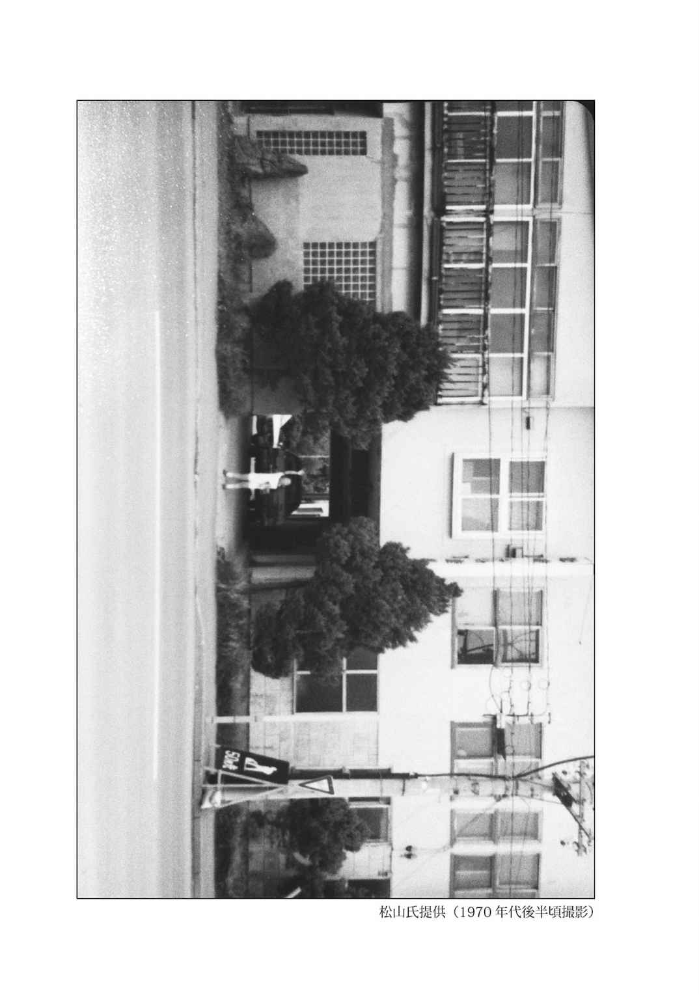

| 「極」怖い話 地鎮災 (竹書房文庫) | |
| 加藤一 | |
| 竹書房 (2013) | |
この作品は縦書きでレイアウトされています。
また、ご覧になる機種により、表示の差異が認められることがあります。
一部の漢字が簡略字で表示されていることがあります。
※本書に登場する人物名は、様々な事情を考慮してすべて仮名にしてあります。また、作中に登場する体験者の記憶と体験当時の世相を鑑み、極力当時の様相を再現するよう心がけています。現代においては若干耳慣れない言葉・表記が登場する場合がありますが、これらは差別・侮蔑を意図する考えに基づくものではありません。
イラスト 久保田晃司
棟上げ式
家を買う、というのは大層な準備が必要である。
まず、金が掛かる。大多数の人にとっては一生に一度あるかないかの一大イベントであり、また一生のうちで最も高い買い物でもある。即金でポンと払える額面ではない。
これが、マンションであれアパートであれ公団の類であれ、賃貸ならまだ気楽ではある。
何か気に入らないことがあったなら、そのときは解約してしまえばいい。手続きが多少厄介だろうが、それで少しの損が出ようが、自分の所有物ではないのだから返してしまえばいい。しかし、買うとなったらそれは気軽に返品や交換ができない。自然、慎重にもなる。
つまり、一生に一度あるかないかの決断を事前練習をすることなく、またあまりにも少ない情報の中で一発で決めなければならない。即金で買えないということは借金を重ねなければならない訳で、買うことを決めてしまってから、ましてや住み始めてから何か問題が起きても、「それでは返品します、お金も返して下さい」という訳にはいかない。
もちろん、恐らく大多数の家や土地というものは、信頼できる不動産業者や信頼できる工務店などを経て建てられたものであり、極端に警戒する必要はないものだ。
だが稀に、そうではない物件がある。
不具合、不都合、不条理、不義理、そんな「不」の連鎖が続いたものがある。
たまたま、売り主が変死した。たまたま、前に建っていた家が火事を出した。たまたま、前の住人が夜逃げして、まだ真新しいのに競売に出されていた。
所謂 「瑕 疵 物件」である。
売り主は「土地の素性」について買い主にきちんと説明をしなければいけないことになっている。曰く、変死、自殺、他殺などの事件、火災・水害などの災害、敷地内に井戸があるかどうか、近隣に墓地、寺社、その他の宗教施設があるかどうか、近隣に暴力団の事務所やその関連施設があるかどうか、など。その土地に何らかの瑕疵があるなら、そのことは必ず買い主に、事前に説明しなければならない。
もちろん、それらの瑕疵のうち実体と実害を伴うとは限らないものもある。
例えば、「たまたま不幸が重なっただけ」のようなものとか。そうしたものは、「気にする人は気にする」程度かもしれない。これを心理的瑕疵という。
そういう、誰かの不都合の連なりがあって手放された心理的瑕疵のある土地を、たまたま運良く 手に入れることができたのだ、とする。
相場よりずっと安い値段で、どういう訳だか話がトントン拍子で進み、片付かなかった厄介ごとが振り払われるように解決していく。そうしてまるで、その土地に、その家に吸い寄せられるように絡め取られていく。
それを、つい運が良かった、ラッキーだったと喜んで、新生活をそこで始めてしまう。
その後に、何が起こるかなんて考えもしない。
一世一代の大きな買い物を終えて満足し、自分のためだけの隔絶された空間を手に入れたのだ。気を抜いて弛 緩 していても許される場所だ。誰だって油断もする。
さて──。
此 度 は家に纏 わる事柄を幾つか並べてみたい。
「家を買うなど、この先も一生縁がありそうにない。だから、自分は間違いなく安全圏から他人事として眺めていられる話ばかりだ」
そんな風に考えていやしないか？ 果たしてそう言っていられるものなのかどうか？
餅撒きも木 遣 りのひとつもないのは心苦しいところだが、この本、無事故で建つや建たざるや。
著者
マンション外壁
「いや、だからね？ 立ってたんだよ」
彼の話は唐突で、何とも要領を得ない。
「ファミレス帰りに見た。そいつ立ってたんだよ。マンションに立ってたの」
情報が少なすぎてピンと来ないので水を向けてみる。
ええと、ベランダに？
「違うよ。マンションの壁にだよ」
ええと、じゃあ、マンションの室内の壁際に立っていた？
「違う違う！ 分かんねえかなあ、マンションの外壁に立ってたの！」
苛立ちが伝わってくるのが分かる。
こちらももどかしいのだが、まだ状況が見えてこない。
「だからさあ！ マンションの外壁に向き合うような感じで、ええと四階だったか五階だったかの、ベランダも足場もとっかかりも何もない空間にさ、人が立ってたんだよ！」
つまりこういうことらしい。
空中に透明な足場があり、その上に気をつけの姿勢で立っている。
スーツ姿の男が。
飛び込み営業でもしているのか、それとも細君が怖くて部屋に入れないのか。
理由がどうあれ、それはない。
そんな所に立ち尽くしてちゃいけない。
時計を見ると、夜中の三時を回ろうかというところだった、らしい。
「俺？ その後？ ああ、すぐに帰ったよ」
もう少しその場に留まって、何か起きるまで待っていてくれれば良かったのに。
「バカ言うなって。だってあんなもの、あんまりじろじろ見ていいもんでもないだろ？」
瑕疵物件
その頃、松永夫妻は家探しをしていた。
夫の剛史さんは勤め人。妻の由里子さんは専業主婦。
結婚して数年が過ぎ、今のところ子供もない。日々の暮らしは慎ましくもそれなりに充実していた。
夫婦ともに三十代を迎えて、そろそろ自分達の家が欲しいと考えるようになった。
それまで賃貸住宅で暮らしてきたが、月々の家賃を幾ら払ったところで住んでいる部屋が自分達のものになるわけでもない。例えば月々八万の家賃を十年間払い続けたら、それだけで一千万近くにも及ぶ。それはちょっとしたマンションの頭金としても多すぎるくらいの金額である。
だったら、いっそ買ってしまおう、という話になった。できることなら終 の棲 家 としたいし、万一のことがあったときに不動産の形で家を持っていれば、今後の大きな資産にもなるのではないか、というわけだ。
「できれば新築のほうがいいよね」
由里子さんも乗り気だった。もちろん、より新しいほうがいいに決まっているけれど、そこは予算の壁というものもある。
一カ月ほど方々探しているうちに、掘り出しものの話が舞い込んできた。
「これは条件のいい、出物の物件だと思います」
仲介した不動産屋はそう言って胸を張った。
中古マンションの四階である。築年数は二十年余り。決して新しいとは言えない。むしろ、ほどよく古い。
間取りは３ＬＤＫだが、やや古い物件であるせいか、今どきの新築物件に比べて居室のひとつひとつはかなりゆとりを持った広さとなっている。おまけに駐車場一台分も付いてくる。交通の便も悪くない。
「この地域ですと、築二十年の３ＬＤＫでしたら相場で言えば二千万円台から、といったところでしょう」
不動産屋の言葉に嘘がないことは、足を棒にして物件を探し回ってきた松永夫妻にはよく分かる。交通の便もよく近隣にショッピングセンターもあるこの地域の相場は、大体そのくらいだ。
しかしこの物件は一千二百万円で良いという。
勢い、物件のことを知ったその日に内覧させてもらった。
内部はリフォームされており、築年数を感じさせないほどに綺麗だった。クロスに日焼けもないし、フローリングに傷みもない。
「どうなさいますか？ これだけの物件はそうそうありませんし、内覧の順番をお待ちいただいているお客様もいらっしゃいますので、早めにご決断いただけますと助かります」
不動産屋は揉み手をして承諾を促した。
そのまま決心しそうだったが、そこはぐっと堪えた。
幾ら何でも安すぎるだろうと思ったのだ。
不動産売買では、その物件にどういった過去があったかについて、仲介する不動産業者は買い主に説明することが義務づけられている。
例えば、事件があった。事故があった。前の家主が変死している。変死には病死、孤独死から自殺まで含まれる。火事を出した、集合住宅なら水漏れなどの甚大な不具合があったというのも瑕疵に入る。近隣に宗教団体やその関連施設がある場合、墓地や寺社がある場合、暴力団の事務所などがある場合、などなど。
こうした物件を心理的瑕疵物件という。建物そのものに原因や問題は認められないか、因果関係が説明できない、或いは改善されているけれども心理的な瑕疵あり......要するに、気にする人は気にする、というアレだ。
伏せたままにしておくと契約後のトラブルに発展しかねないので、そこは事前に詳らかにしておくのが業界の仁義であるらしい。
不動産屋からは「特にそういう問題は報告ありません」と言われている。
しかし、ハイそうですかとも、その場で簡単には納得し難い。
「一生に一度あるかないかの大きな買い物なのだから、失敗はしたくない」
一度持ち帰って考えてみる──と、決断を先延ばしにした松永夫妻は、八方手を尽くしてこの物件について調べてみた。
しかし、特別、この部屋に瑕疵があったということはないようだった。
「どうする？」
「もうここで決めちゃおうよ」
探し疲れということもあっただろう。
松永夫妻は相談に相談を重ねた末に、この物件に決めた。由里子さんが結婚前に貯めた貯金と、剛史さんのこれまでの貯金のほとんどを注ぎ込んでの、大きな買い物になった。
実のところ、部屋の築年数や状態にはほとんどまったく不満はなかったのだが、この部屋は少し不思議な作りになっていた。
リビングの壁に鏡がある。
壁に引っかけてあるのかと思ったら、そうではなかった。クロスの一部分が鏡の形にくり抜かれており、鏡は完全に壁の中に埋め込まれてあった。
壁の丁度中央辺り。天井からも床からも、やはり同じくらいの高さだ。
大きさは六十センチ四方ほど。
全身が映るでもなければ、顔を映そうにも少し屈んで顔を近付けなければならない。
至極使い勝手が悪い。
鏡の正面はリビングに面した南向きのベランダを向いており、ベランダに続く掃き出し窓がすっぽり映っている。
「この鏡、何だろう」
「据え付けてあるみたいだし、そういう仕様なんじゃない？」
一応、不動産屋に問い合わせてみた。
『ああ、その鏡でしたら以前からあったものですが、身だしなみを調えるのにお使いいただけると思います』
不動産屋の認識としては便利な調度品ということ以上のものではないらしく、返答も要領を得ない。
「良かれと思って作ったのかもしれないけど、言うほど俺達のライフスタイルには合わないよな......」
「ぴったり鏡を隠せるような何かを置いちゃえばいいんじゃない？」
「そうだな」
思案した末、ここには本棚を置くことにした。
新しく注文したオシャレな木製の本棚を、二人掛かりで組み立てて鏡の前に置いてみると、漸 く部屋も落ち着いた。
こうして、自分達の終の棲家を得た感慨を得ることができた。
暮らし始めて一カ月程が過ぎた。
何しろ貯金はすっからかん。それでも仕事は順調なので、「また稼げばいいよ」と笑顔で勤めに打ち込むことができた。
家の片付けや新しい街の探索などは由里子さんに任せ、剛史さんはへとへとになるまで働いて愛しの我が家に帰るという日々に、それなりに充実感を覚えていた。
ある日曜の朝。
この日は朝から晴れて、外は春らしいぽかぽかした陽気となっていた。
日当たりのいいリビングでゴロゴロしていると、思わず二度寝三度寝をしてしまいそうだった。
剛史さんは灰皿と煙草を持ってベランダに出た。
ライターで火を点け、深く吸い込んだ後に紫煙を吐き出す。
前の家でも今の家でも普通に吸っていたし、新居に移ったからといって特に室内禁煙というルールも決めてはいない。
ただ、こんな陽気の日は外を眺めながら一服したくなったのだ。
そういえば、これほどゆっくり辺りを眺めるのは、引っ越してきて以来かもしれない。
周囲には、この建物と似たような作りのマンションが何棟か建っていた。
道路を挟んだ反対側に、高さも作りも同じくらいのマンションがあった。
見ると、丁度同じ高さ──四階に、自分と同じようにベランダに凭 れている男の姿があった。
（あちらさんも蛍族かな）
興味が湧いてそちらを眺めると、向こうもこちらを見つめていた。
距離にして二十メートルもない。
向かいのベランダの男の表情も見て取れた。
くすんだ土気色の顔に彫り込まれたような深い隈。寝起きなのか、それとも頓着しないのか、髪はほつれて乱れている。
何をするでもなく、こちらを──明らかに剛史さんのほうを見つめている。
こちらも向こうを眺めているのだからお互い様なのだが、視線を絡める形になっても臆する様子がない。
（......煙草が気に入らないのかな）
道路を挟んで煙草の煙が届く距離ではない。文句を言われる筋合いはないはずだが、たまにいる度の過ぎた嫌煙家は、自分が風下にいるというだけで鬼の首を取ったかのような顔をして、言いがかりに近い猛烈な批判を加えてくることがある。
剛史さんは形だけ頭を下げて、それから煙草を灰皿に押し付けた。
あからさまに消してみせたのだが、相手は表情を変えない。
変わらず、ずっとこちらを見つめている。睨んでいる、と言ってもいい。
（......なんだよ、あいつ）
こっちが気を遣ってやったのに。
少し腹が立った。相変わらずベランダの男はこちらを凝視している。
それ以上、不愉快な睨み合いを続ける気になれず、リビングに戻りカーテンを閉めた。
「何、どうしたの？」
眉間に皺 を寄せて戻ってきた剛史さんに、由里子さんが訝 しげに問うた。
「何か、向かいのマンションに変な奴がいてさ。こっち睨んでくるんだよ」
「えー、やだあ」
由里子さんも立ち上がった。
カーテンの隙間からそっと様子を窺 うと、土気色の男がこちらを見ている。
「やだ、目が合っちゃった！」
「あの野郎、まだ見てやがんのか」
憤る剛史さんの隣で、由里子さんは何か思い返しているようだった。
「......あのね......あの人、私達が越してきたときからいたような気がする」
「えっ」
「気のせいかもしれないんだけど、いつも見られてるような気がしてたのよ」
微かな視線を感じてはいたが、それがどこから来ているのか分からなかったのだという。
「まあ、関わるのはやめよう。こっちが気にしなければいい話さ」
この日の夕暮れ、カーテンの隙間からもう一度覗いてみた。
男はまだこちらを見ていた。まったく微動だにしない。
気味が悪かった。
剛史さんはカーテンの隙間をぴったりと閉じた。
日当たりのいいリビングは、この日を境に失われた。
新しい部屋に越してきた当初は、新生活に心が躍った。
慣れない街、慣れない部屋に慣れ始めてくると、それが日常に変わる。
勤め先で過ごす時間が長い剛史さんに取っては、通勤ルートと晩飯と朝飯を食べるところ、寝るところが変わるくらいで、日常の過ごし方の大部分は引っ越し前とさほど変わらない。
日が暮れてから家に帰り、朝は慌ただしく家を出ることの繰り返しで、ゆったりリビングで過ごすこともなく、あの男のことなど次第に記憶の隅から消えていった。
だが、由里子さんはそうもいかなかった。
由里子さんは結婚してから仕事を辞めて、専業主婦となっている。
日中、ほとんどの時間をこの部屋で過ごす。
家事をしていても、テレビを見ていても、その他の趣味に気を紛らわそうとしても、リビングにいる限り、視線を感じてしまう。
事ある毎にベランダを見てしまう。
そして、そのたびに道路向かいのベランダから、男がこちらを見ている。
その風貌も表情も、いつも変わらない。
あらゆる時間にそこにいる。
朝、夫を送り出した後も、昼、家事の合間に一息入れたときも、夕、夫の帰りを待って夕食の支度を始めるほんの僅かな時間にも。
「あの人、またこっちを見てたよ」
「朝も昼も関係ないみたい。ずっと見てるのよ。気持ち悪い」
由里子さんの話を総合すると、あの男は働きに出るでもなく他の何かをするでもなく、ただいつもベランダに立ち、常にこの部屋を見張っているようだった。
「ストーカーかもしれない」
由里子さんはそう怯える。
「でも、この部屋以外で見かけたことはないんだろ？」
一階まで降りてしまうと道路からは死角になるようで、あの男の部屋のベランダは見えなくなる。実際、近所を歩いていても、スーパーなどに出入りしていても、誰かに尾けられるようなことは起きていない。
ただひたすら、窃 視 され続けている。それだけだ。
その、それだけのことが由里子さんの精神的負担になりつつあるようだった。
「ねえ、あの人、私達が来る前からああだったのかしら。だったら、このマンションの他の部屋の住人も被害に遭ってるかもしれないよね。それに、この部屋が安い理由もそれかもしれない。前の住人はそれで出ていっちゃったのかも。そうよ、きっとそう」
「おい、由里子、おい」
由里子さんはかなり参っているようだった。
剛史さんが口を挟むのも許さない。
「ねえ、相談しましょうよ。ここのマンションの管理人さんとか、管理組合とかに」
「待てよ、由里子」
築二十年の中古マンションである。
他の住人達はきっと古参ばかりだろう。自分達はまだ越してきて日の浅い新参である。
古参達の間で、これが噂や問題になっているのだとしたら、入居のときにそれとなくそういう話があっても良かったはずだ。
しかし、そういう話は聞かされていなかった。ということは、古参達の間では取るに足らない話なのかもしれない。
「俺達、このマンションに越してきてまだ日も浅いだろ。越した早々に面倒を起こしたなんて思われたら、後々居辛くなるかもしれん」
賃貸マンションなら話も違った。嫌なら嫌と言えたし、気に障るならさっさと引っ越すこともできただろう。
しかし、この部屋は借りているのではない。仮にも終の棲家のつもりで買ったのだ。
容易に手放すなど考えられない。
剛史さんはなおも不安に駆られる由里子さんを宥め、我慢を強いた。
由里子さんの訴えは収まる様子がなかった。
むしろ、次第に激しくなっていった。
「どうしてこんなに我慢しなきゃならないの！」
「あいつは絶対におかしいのよ！」
「私達は狙われてるのよ！ なぜそれが分からないの！」
訴えが、怒声から金切り声に変わるのにさほど長くは掛からなかった。
「とにかく、大声を出すな。近所迷惑だろう」
「迷惑しているのは近所じゃなくて、私よ！」
売り言葉に買い言葉で、些細なことから喧嘩が始まる。
由里子さんの激しい詰問に剛史さんも怒声で返す。
「うるさい！ 黙れ！」
顔を合わせるだけで喧嘩になる。
互いに目が合うだけで掴みかからんばかりの罵 倒 合戦が始まる。
疲れて家に帰ってきても、夕食の支度もしていない日が増えてきた。
何を言っても喧嘩になるので夫婦間の言葉数も減っていく。
それでも、妻の様子は気に掛かる。
帰宅すると、由里子さんが部屋の明かりも点けず真っ暗なリビングに座り込んでいることもあった。
身体の具合でも悪いのかと不安になって声を掛けると、スイッチが切り替わったかのように剛史さんを詰 り始めた。
何を言おうとしているのか要領が掴めない。
いや、罵 っているのだということは分かるのだが、由里子さんが発する言葉はまるで意味を成していなかった。
ぐるあ、とか、どるぁ、とか、唸っているのか呻 いているのか、口角泡を飛ばして叫んでいるのか、それとも単に威 嚇 しているのか。
「うるせえよ！」
「おまえがうるせえ！」
「だったら出ていけ！」
「そっちが出てけ！」
口論になっているうちのほうがまだマシだった。
口論なら、少なくとも互いに何らかの言葉を通じた意志の往来があるように感じられる。
だが、こうなっては論などどこにもない。
互いに、ただ感情をぶつけ合っているに過ぎない。
仕事で疲れ果てて帰宅しても飯も出ず、妻は呆けているか訳の分からない恫 喝 を繰り返すばかり。
剛史さんの神経もまた、凄まじい勢いで磨 り減っていった。
由里子さんとの会話は途絶えた。
互いに目を合わさず、家の中ですれ違うときさえ気を遣った。
同じ家に住んでいるのに、なるべく互いを意識しないように、互いに相手から身を隠すかのように過ごす。
そんな日々が半月ほども続いた。
もう、限界だった。
剛史さんは、仕事先から家へ向かうのが憂 鬱 で堪 らなかった。
いっそ帰らない、というのも考えた。
しかし、あの部屋は自分のものだ。いや、自分達夫婦が力を合わせて手に入れた終の棲家のはずだ。その部屋に自分が帰れない、近付きたくないなどあってたまるか。
（いつか、今日こそ、由里子も落ち着いているかもしれない）
この数週間でそんなことはすっかり諦めていたのだが、嘘でも自分にそう言い聞かせなければ、家に帰ることすらできなくなっていた。
そして、ついにその日が来た。
「ただいま」
一応、帰宅を告げるため一声掛ける。妻からの返事など期待していない。
部屋の中は真っ暗で明かりも点いていない。
このところずっとこうだ。そして暗がりでシーリングライトのスイッチを入れると、由里子さんがフローリングに座り込んでいるのだ。
が、今日はいつもと違った。
明かりが点いた部屋の中で、由里子さんはリビングテーブルの前に座っていた。
テーブルの上に何かの用紙がある。
離婚届。
由里子さんの名前も捺印も済ませてあった。
──ああ。なるほどな。
驚きも怒りも未練も何もなかった。
来るべきものがきた。漸くこれで解放される。
そんな感慨しか浮かんでこなかった。
由里子さんは無言のままで、何の説明もない。
だが、何の説明も要らなかった。
離婚届を挟んで、剛史さんはリビングテーブルの反対側に座った。
妻と向かい合ってテーブルに着くなんていつ以来だろう。
それが離婚届に判を押すためだなんて。
離婚届を眺めていると、由里子さんはその上にもう一枚差し出してきた。
こちらは役所の用紙ではなかった。
便箋に、見慣れた由里子さんの文字でこう書かれていた。
『覚書
・このマンションは由里子の所有とする
・由里子は剛史に慰謝料を求めない
・家具類はリビングの本棚を除き、全て剛史に引き渡す
・離婚届を提出してから剛史は二週間以内にマンションを出ていくこと
・また、双方の親は是に関与しないこと 』
何かの証文のつもりなのか、日付と署名、捺印するための空白がある。ここにサインと捺印をしろ、ということらしい。
由里子さんからは相変わらず一切の説明がないが、意図するところは理解できる。
これは財産分与の確認のつもりなのだろう。
マンションを寄こせば、それ以外は何も要らない、と。
（この部屋で過ごすことをあれほど嫌がっていた癖に、殊勝なことだ）
文面も内容も、公正証書とは程遠く、これに署名捺印したところで法的効力があるかどうかも疑わしかった。
だがそれで由里子さんが納得するなら十分だったし、剛史さんも早く楽になりたかった。
彼はそれ以上何も言わず、互いに一言も交わさず、それぞれに署名した。
マンションは二週間のうちに引き払うと約束した。
が、もうこれ以上あの部屋にいる義理はなくなった。
剛史さんは貴重品や仕事に必要な品などをカバンに詰め込むと、その足でマンションを後にした。
行く宛は特になかったのだが、まさかこの年齢でネットカフェに転がり込むわけにはいかなかったし、ホテルに長逗留できるほどの金銭的余裕もなかった。
独り暮らしの友人の家に事情を話して転がり込んだ。
事が収まったらすぐに出ていくから、とは言ったものの、あのマンションを買うために貯金のほとんどを吐き出してしまっているので、新居を見つけようにも先立つものもない。
事情を察した友人は「とにかく行き先が決まるまでいていいから」と軒を貸してくれた。
田舎の両親にも連絡を入れた。
「由里子と別れることになった。いや、もう離婚したから」
突然の知らせに両親も驚いていた。
『だって、あんたらマンション買ったばかりじゃないのかい』
「そうなんだけど、まあ色々あったんだ」
『何があったの』
「詳しくは言えない。俺が悪いわけじゃないから、それは気にしないでいい。それと、由里子とは連絡を取らないでくれ。由里子の実家にも連絡しないでくれるか」
息子の言いたいことが両親には今ひとつ伝わりきらないようだった。
『由里子さんに浮気でもされたのかい』
「いや......なぜ離婚することになったか、それも言えない。そういう覚え書きを書かされてるんだよ。ただ、俺の側には疚 しいことはない。そういうことだから。向こうさんへの問い合わせも無用だから。くれぐれも約束を破らないでくれ。俺もそういうことでハンコついてるから」
剛史さんは、そう念を押した。
二週間はあっという間に過ぎ、マンションを引き払う約束の日が来た。
剛史さんは、由里子さんに〈この日に合い鍵を返す〉と知らせておいた。
離婚届に署名したあの日、主立ったものはほとんど持ち出していたが、持ち出しそこねたものは今日全て引き揚げるつもりでいた。
また、あの証文の約束ではリビングの本棚以外は全て剛史さんが引き取ることになっていたが、今これを引き揚げたところで置いておく場所がない。これだけの家財をまさか友人宅に持ち込むわけにはいかない。
それに、夫婦生活の記憶が刻み込まれた家財道具を見るのが辛かった。見れば由里子さんのことを思い出さずにはいられなくなる。
そのため、リサイクルショップに家財道具一切の処分を頼むことにした。端金にしかならないだろうが、全てを引き取ってもらい、換えられるものは全て現金に換えるつもりだ。
未使用のベッドシーツ、ずっと使っていたカーテン、使い古しのラグに至るまで、金に換えられそうにないものも処分してもらった。
証文にあった〈リビングの本棚〉を除く、一切合切を約束通りこの部屋から消し去ってやろうと思った。
当てつけの気持ちはもちろんある。
俺達の夫婦生活を支えたものを全て金に換えても、大した金になりゃしないんだ。
俺達の暮らしはその程度のものだったんだ、という精一杯の皮肉。
だが恐らく、そんな皮肉はもはや由里子さんに届きそうにはなかった。
小一時間ほどで全てが片付いてしまうと、部屋はすっきりした。
引っ越してくる前、この部屋を初めて内覧したときの様相に近い。
空っぽの広々とした明るい部屋を眺めて、これから始まる新生活に胸を膨らませていたのが、まるで遙か昔のことのようにすら感じられる。
あのときとの違いがあるとしたら、唯一残されたリビングの本棚くらいのものか。
二人で組み立て、二人で置いたあの──そうだ、あの鏡を塞いだ本棚だ。
......あの本棚だけが残されたのはなぜだろう。
だが、まあいい。もう、いい。
玄関まで出ると、剛史さんは部屋の合い鍵を由里子さんの足下に放り投げた。
由里子さんはそれを拾うでもなく、もう何の表情も浮かべていなかった。
まるで──。
そう、まるであのベランダの男のような。
「じゃあ......」
靴を履き、ドアを開けて最後にもう一度だけ振り向いた、そのとき。
由里子さんの隣に、あの男が立っていた。
「あっ」
吃驚。
その音を継ぐ言葉を捻り出そうとした瞬間、剛史さんは部屋の外に押し出された。
由里子さんは、眉ひとつ動かさず剛史さんを突き飛ばすと、ドアを無情に閉めた。
「おい！ 由里子！ どういうことだ！ そいつは、何でそいつがそこにいるんだ！」
怒鳴っても返事はない。
チャイムを連打するが返事はない。
ドアを叩き壊す勢いで叩いても、ドアノブを引きちぎらんばかりの勢いで捻り回しても、何の応答もない。
由里子さんの携帯に掛けた。しかし反応はない。
ドア越しに室内から数回コール音が聞こえたが、それも途絶えた。
『お客様のお掛けになった番号は電源が入っていないか、電波の届かないところに......』
無慈悲な機械的メッセージが聞こえてくるばかりだ。
どういうことだ。
あいつがなぜうちにいるんだ。
部屋を片付けている間に入り込んだ？
まさか。
考えが纏まらない。
ドアを幾ら叩いても反応がないので、剛史さんは通りに出て由里子さんがいるはずの部屋を見上げた。
しかし、道路のどの位置に立とうと、四階の部屋の中を覗き見ることはできない。
それこそ、あの同じ高さの向かいのベランダにでも立たなければ無理だ。
一体、あれは一体。
......が、不意に気持ちが冷めた。
あれとはもう別れたのだ。
元妻が何をしようと、知ったことか。
全て片が付いたものの、やはりすぐには新居が見つからない。
「それでも、とりあえず一区切り付いて良かったじゃないか」
という友人の厚意に甘える暮らしは、相変わらず続いていた。
それは、マンションを引き払って五日目の朝のことだった。
「おい、松永！ 起きろ！」
寝床として借りたソファの上から転げ落ちんばかりの勢いで、友人が肩を揺すった。
「な、何......」
「あれ！ あれ見ろって！」
大音量で流れるテレビの画面に、一瞬見覚えのある景色が映った。
が、起き抜けのぼんやりした頭がそれをどこか同定する前に、テレビ画面は切り替わってしまった。
友人は、興奮気味にリモコンをめまぐるしく押してチャンネルを変えた。
朝のワイドショーはどこも同じようなニュースを流している。
再び、先程とよく似た景色が映し出された。
つい数日前まで過ごしたあのマンション。
最後の日、部屋の中が見えないかとうろついたあの通り。
それが映し出されていた。
『......子さんが倒れているのを、近くを通りがかった通行人が発見しました。松永さんは最寄りの病院へ救急搬送されましたが、搬送先の病院で死亡が確認されました......』
由里子さんだった。
離婚届はとうに手渡したはずだが、苗字は離婚前のままだった。
『現場の状況から、松永さんはマンションの四階にある自宅のベランダから転落したものと見られています。これまでのところ遺書などは見つかっておらず、事故と自殺の双方から警察が捜査を続けています......』
直後に警察から連絡が入った。
由里子さんの件で話を聞きたい、という。
恐らく由里子さんの実家から、直前に離婚した剛史さんの話が出たのだろう。
あのマンションを購入し入居間もなく不仲になり、怒鳴り合いの口論を重ねていたことは近隣の住人に知られている。挙げ句、部屋の中身をほとんど空っぽにして引き払ったばかりの元夫に、嫌疑の目が向けられるのは無理もない。
捜査員の口ぶりは〈復縁を迫ったが断られ、掴み合いになり、カッとなって発作的に突き落としたのではないか〉という可能性を疑っているようだった。
ただ幸い、寄宿させてくれていた友人が、潔白を証明してくれた。
第三者である友人のアリバイ証明の裏が取れて、剛史さんに掛かった嫌疑は晴れた。
結論から言えば、松永夫妻が購入したマンションの一室は、瑕疵物件ではなかった。
「瑕疵物件は、あの向かいの部屋だったんですよ。ベランダの男がいた、あの部屋」
事件後、聞き回った結果として〈縊 死 だった〉ということまでは分かった。
分かったのはそこまでで、人となりも自殺の原因もそれがいつ頃のことかも、一切分からずじまいだった。
ただ、あの部屋は長く空き部屋だったらしい。
松永夫妻が入居した当初から、由里子さんの死による幕引きまでの間、ずっと。
「自分の記憶違いかもしれないんですが......あの男の背後には、家具なんかもちゃんとあって......決して空き部屋ってことはなかったと思うんです。確かに、そこで暮らしている生活感みたいなものがあった。そんな気がするんです」
カーテンのようなものはなかったはずだ。
男はベランダに立って、ただずっと、いつもずっと、松永夫妻の部屋を見つめていた。
「由里子は......自殺じゃなかったんじゃないかって、最近は思うんですよ。あいつの、あのベランダの男のところに行こうとして、ベランダ乗り越えたんじゃないかなあって」
それと、もうひとつ。
由里子さんは他の全てを手放してもあの本棚だけは手放さなかった。
いや、違う。
最後まで、鏡を隠していた。
そのために本棚を必要としていた、のだとしたら。
「あの鏡が何で、どんな意味があったのかなんて分からないんですけど......あのとき、あの鏡を隠さないでおいたら、こうはならなかったのかもしれません。今更言っても、もうどうにもならないんですけどね」
アパートの隣人
白沢さんの祖父母夫婦は子供達が自立した後、アパート住まいをしていた。
白沢さんの家からは自転車を飛ばして五分ほどもない近所にあったので、兄弟揃って頻繁に遊びにいっていた。
祖父母達は静かな暮らしを望んでいたが、隣人がそれを許さなかった。
隣室には、細野という六十代手前くらいになる初老の夫婦が住んでいた。
老いた者同士、静かに過ごしてくれれば良かったものの、細野夫妻はそんなささやかな祖父母達の望みなど、意に介してはくれなかった。
日暮れて、近隣の住人達が家路に辿り着く。
隣家のドアが開く音が聞こえた。
勤めに出ていた細野夫妻の主人が帰宅したようだった。
薄い壁を隔てて、再びドアが開く音が聞こえる。
（ああ、またか......）
白沢さんのお祖母さんは溜息を吐いた。
細野夫妻の主人には日課があった。
帰宅するとまず作業服を脱いで上半身は裸、下は作業ズボンに雪 駄 という風 体 になる。
その格好でアパートの前に降り、周辺の野良猫に餌を与える。魚肉ソーセージやら、安物の猫缶やら、ツナ缶やら、そういったものを猫達に振る舞う。
この餌付けによって、アパートの周囲には随時野良猫が集まっていた。
集まった猫達は、細野主人によってケアされているわけではない。ただ、施し目当てに寄り集まってきただけで、しかも全ての猫に十分に行き渡るほどの餌を与えているわけでもないから、ありつけないあぶれ猫が出てくる。
そうなれば、餌にあぶれた行儀の悪い猫達は、近隣を荒らし始める。
ゴミ袋を爪や牙で食い破り、アスファルトの上に生ゴミを撒き散らす。
伸び放題の爪をそこかしこで研ぎ始める。庭木、アパートの壁、付近の駐車場やアパートの前に停められた自動車も例外ではない。車体やタイヤに無残な疵 痕 が増えていく。
おまけに、そこかしこに糞尿をする。植木鉢の中にもする。挙げ句に倒す。
盛りの季節ともなれば、雄猫達が臭い付けをする。
またそこに、蠅が湧く。
斯くしてアパート周辺は、ゴミ屋敷のように不衛生な悪臭漂う環境に成り果ててしまう。
当然ながら、近隣からは苦情の声が上がった。
隣人である白沢さんの祖父母も苦言を呈したことがあった。
「もう少し考えてもらえませんか」
できるだけ穏便に、しかし「困っている」ということが伝わるように言葉を選んだ。
だが、細野主人はおよそ耳を貸すことはなかった。
「何だァ？ 俺が猫に飯やって、何が悪ィってんだァ!? ああ？」
そう言って、酒でとろんとした目を見開き、脱いだ諸肌の背を見せて凄む。
細野主人の背中から両肩、両胸には、鮮やかな色合いの般 若 の和彫りが入っていた。
この彫り物が細野主人の人生の来歴を物語る。
およそ真っ当な道を歩いてはこなかった、その筋の人間なのだろう。
ただ、出入りする子分の一人も見当たらず、老いて落ちぶれている様子からすれば、そちらの筋の出世街道からさえもこぼれ落ちた人間なのだろうことは察しが付く。
酒の力を借り、堅 気 の人間に昔の彫り物を誇示して凄むのが関の山であろうけれども、それでもそんな素性の人間に不慣れな近隣住民には、十分面倒で恐ろしい存在であった。
それならば、夫人のほうはどうなのかというと、こちらも厄介な人物だった。
細野夫人は歳に似合わぬ派手な装いをしていた。水商売が長いのか、快活だが酒焼けしたガラガラ声に、いちいち棘 のある不 躾 な言葉を選ぶ。
「別に猫ぐらい、いいじゃないの。命に関わるわけでなし」
これはこれで、取り付く島がない。
これではおよそ穏便な話し合いなどできそうにもなかった。
そこで、細野夫妻を除いて町会で話し合った結果、こう決まった。
「野良猫は駆除しましょう」
可哀想ではあるが、細野主人が餌をやる相手を間引いてしまうより他にない。これは地域の保健所に依頼することになった。
そして、なるべく細野夫妻と関わり合いを持たない。もし、因縁などを付けられるようなことがあったら、各自で個別に解決しようとはせず、一にも二にも警察に通報する。
刺青を背負った者に自力で対応するような術は人々にはなかった。
その後、野良猫の駆除は少しずつ進められた。
細野主人は日中は勤めに出ているので、昼間の間に周辺の猫を捕獲、駆除していく。
これによって、細野主人が与える餌に集まってくる野良猫の姿は徐々に減っていった。
この結果、野良猫による被害は減少し、細野主人を咎 める機会も減り、また細野主人が大声を張り上げて怒鳴る回数も次第に減っていった。
それから数年後、細野主人は再びあの作業ズボンに雪駄、彫り物という姿を人前に晒 すようになった。
だが、それは以前のような恫喝のためではなかった。
その奇行は定年直後くらいから始まっていた。
細野主人は老いた顔に虚ろな表情を貼り付け、どこかへ行こうという明確な意志もなく、ただただ往来を彷徨 っていた。
初めのうちは散歩の類だろうと誰もが思っていたし、関わり合いにもなりたくなかったから、誰もが触れず騒がずでやり過ごしていた。
ついには、日中に出かけていったまま帰宅せず、数キロも離れた街で真夜中に保護されるに至って、それが〈散歩〉ではないことが知れることになった。
細野主人は認知症を患っていた。
近隣のスーパーに現れては、売り物の菓子や総菜をその場で食い荒らす。
自転車が盗まれたこともあった。
それも、白沢老夫妻の元へ遊びにきた孫の自転車である。
子供用の小さな自転車を、細野主人は我が物顔で乗り回した。
その姿はおよそ窮 屈 そうであったが、本人はサーカスのクマよろしく、よちよちとそれに乗る。返すつもりもないようで、飽きてどこかに乗り捨てるまで打つ手はなかった。
近隣の住民達も、多かれ少なかれ皆似たような経験をしていた。
しかし、同時に細野主人が認知症であることも知れ渡っていたため、苦情を申し入れても通じないことも分かっていた。
主人の保護と監視を夫人のほうに申し入れようにも、
「アタシも忙しいんだよ！ 何であんなボケジジイの面倒を、アタシが見なきゃいけないのさ！」
と、けんもほろろの扱いで、認知症の夫を介護するつもりなど毛頭ないようだった。
細野主人は付近の家に勝手に上がり込むようになった。
白沢さんのお祖母さんが買い物から帰ると、部屋の奥から鼾 が聞こえてくる。
「あなた、帰ってたの？」
お祖父さんだと思って声を掛けるが、返答がない。
見ると、細野主人が炬 燵 に突っ伏して高鼾を上げていた。
どこかで漏らしてきたのか、室内にプンと饐 えた小便の臭いが漂っている。
思わず息を止めた。
たまらず、白沢さんのお祖母さんは隣家の細野夫人を呼びに出た。
「あのね、そちらの旦那さん、うちに上がり込んで眠ってしまっているのね。悪いんだけど、連れて帰ってあげてくれないかしら」
細野夫人は露骨に不機嫌そうな表情を浮かべ、腰を上げた。
「まったく、どれだけアタシに迷惑かけりゃ気が済むんだか」
つかつか歩み寄ると、細野夫人は炬燵で寝入っていた主人の顔面を蹴り飛ばした。
無抵抗の細野主人は吹き飛ばされた顔をよろよろと持ち上げる。
鼻血をぼたぼたと垂らしながらも、表情は虚ろなままだった。
かつての鬼気迫る怒声を張り上げていた様子は、今はもうどこにもない。
「まったく、散々文句聞かされて、長いこと迷惑も掛けられっぱなし。挙げ句にこんなボケジジイの世話なんて冗談じゃない。まっぴら御免だ」
夫人は夫の襟 首を掴んで引きずり立たせ、耳元に呪いを掛けるかのようにがなり立てる。
「アンタなんて要らない。早くおっ死 んでくれりゃいい。誰かが轢 き殺してくれりゃなおいい。死ね。早く死ね。そうしてくれりゃせいせいする」
細野主人にはかつては散々迷惑を掛けられてきたとはいえ、そのあまりに惨 い扱いに哀れさえも感じた。
何もそこまで言わなくても、という言葉が出掛かったが、それも飲みこんだ。
どうせ、通じない。
それから程なく。
「じゃあ、祖 父 ちゃん、祖 母 ちゃん、今日は帰るね。おやすみ」
遊びに来ていた白沢さんが祖父母の家を出たのは、割と遅い時間だった。
住宅街を横切る線路は、工業地帯に向かう貨物列車の引き込み線になっている。
遅い時間にも拘わらず、踏切の遮断機が下りる音が遠くこだましている。
うとうとと微睡 みながら風呂を浴びていた白沢さんの耳に、遮断機の音とは異なる音が響き渡った。
──カンカンカンカンカンカンカン......。
──ガンッ。
重い打撃音。
──ギギャガガガガガガガガ......。
そしてこれは、緊急ブレーキが引かれ、鉄の動輪がレールを軋 ませて滑る音。
眠気が飛んだ。
それから、十分程過ぎただろうか。
遠くから救急車のサイレンが近付いてくる。ドップラー効果で遠のいてはいかず、家の近くでサイレンが途切れた。
──それっきり、静かになった。
翌日、学校から帰ると母が言った。
「お祖母ちゃんちの隣に、細野さんってご夫婦いたじゃない」
「ああ、あのちょっとボケてた刺青の人？」
「そうそう。あそこのおじさん、昨日の夜中にそこの踏切で轢かれたって」
どこから持ち出したのか、細野主人は子供用の三輪車を漕いでいた。
キコキコと三輪車を漕ぎながら降りてくる遮断機を潜り、貨物列車に轢かれた。
細野夫人の望んだ通りに。
認知症だった細野主人があっけなく、そして望み通りに死んでしまった後、細野夫人は特に嘆き悲しむ様子もなかった。
むしろ、肩の荷が下りたかのようにウキウキと機嫌良く家を出る姿が目撃された。
以前にも増して快活になったようですらあった。
水商売の女は、その仕事を続ける限りどれほど歳を取っても女であることを辞めないというが、認知症の夫がいなくなったことで、もはや自らの所業を隠す必要すらなくなったようだった。
だが、亡くなった夫の四十九日が終わる前に、細野夫人の我が世の春は終わりを告げる。
深夜、白沢さんの祖父母は、どたん、ばたんと暴れる音を聞いた。
それがパタリと止んで静かになる。
隣家の主人は亡くなっており、今は未亡人となった細野夫人が一人で暮らしているはずである。
泥棒、強盗の類でも押し入ったのなら、大変だ。
「中で何かあったんじゃないか」
警察と救急を呼んで、後は固唾 を呑んで様子を窺うのが精一杯だった。
室内には夫人一人しかいなかったが、倒れていた夫人は既に事切れていたようで、搬送先の病院で死亡が確認された。
死因は心不全。何かが原因で心臓が止まったが、原因が何かは特定できない。
細野夫妻はどちらも身寄りがなかったので、アパートの大家が代わって細野夫妻の荷物の整理をしにきた。
荒れた室内は足の踏み場もなかった。
先に亡くなった細野主人の仏壇や位牌の類はなく、骨壺はガスコンロの隣に無造作に置かれてあった。
台所には真新しい三輪車が二台、転がっていた。
生前、細野主人が拾ってきたものだったのかもしれないし、死後、二人分のそれを携えて夫人の目の前に現れたのかも分からない。
どういうことだったのかは判断しかねるが、細野夫妻が住んでいたこの部屋は、今も空き室のままとなっている。
小金井のアパート
水野氏は、それまで所属していたプロダクションを辞めた。
これからどうやって暮らしていこう。人生の再スタートについて、この際だからゆっくり考えを巡らせたい。腰を据えて考えたい......というのは体のいい言い訳で、何も思いつかず他にすることもなく張り詰めていた糸が切れてしまった水野氏は、この時期たまたま人生の夏休みに突入したところだった。
行く宛もなければ今すぐ何かしよう、という気持ちにもならなかったので、当時付き合っていた彼女のアパートに転がり込んだ。
小金井駅から徒歩十五分ほどの場所にあったアパートは、こぢんまりした２Ｋだった。
二畳のキッチンに二畳の次の間、それから奥に寝室と居室を兼ねた六畳一間。ワンルームというにも狭い部屋で、二人で過ごすには窮屈で手狭だ。
二階の角部屋、おまけにベランダ側の窓を開けると目の前は空き地。
部屋は手狭であったものの、見晴らしと日当たりは良かった。だから、この部屋で何をすることもなくぼんやりと過ごすのは結構気に入っていた。
「じゃあ、あたしもう行くけど、出かけるなら鍵掛けていってね」
彼女がそう言って仕事に出かけていった後、水野氏は狭い六畳に四肢を伸ばした。
朝の日差しが射し込む中、点けっぱなしのラジオをぼんやり聞いているうちに、またうとうとと眠気がぶり返してきた。
──ザッ。ザザザッ。
突然、激しいノイズが耳を打つ。
点けっぱなしになっていたラジオのフェージングで、目が覚めた。
もぞもぞとラジオのスイッチに手を伸ばそうとしたところで、日の当たる室内に人の気配を感じた。
「あれ？ 忘れ物？」
彼女かと思って眠い目を擦りながら声を掛けたとき、水野氏はそれが自分の彼女ではないことに気付いた。
それは少女だった。
歳の頃は小学校低学年くらい、といったところか。
おかっぱ頭よりずっと短いショートカット。
ただ、その衣服は随 分 と粗末だった。果たしてそれを衣服と言って良いものかどうか。
手を入れる穴が開いただけの、薄茶色の布きれをすとんと被っただけの格好。いや、薄茶色というのも正しくはない。元の色は分からないが、それは汚れに汚れた挙げ句、泥や垢の色が染みついただけであるようだ。
そして、左目の周りには痣 があった。牛乳瓶の口ほどの丸い輪っかの痕、といったほうがより正確だろうか。
それは水野氏の彼女ではないし、その尋常ならざる異風は今どきのホームレスとも違う。
いつ、どこから入り込んできたのかも分からない。
水野氏とはまったく初対面であるはずの少女は、若干の緊張を覚えつつも臆さず話しかけてきた。
──ね、お兄ちゃん、遊ぼう。ここにいるよ。ね、遊ぼう。何して遊ぶ？ 何がいい？
歓声のような、囀 りのような、止めどない奔 流 のような。
はっきり、そう言葉として聞き取れたわけではないのだが、親鳥の帰還に気付いた雛鳥が、親鳥の気を引こうと盛んにさざめくのにも似ていた。
水野氏が寝転がっている布団の周りを、飛び立ちかねないような勢いで跳ね回る。
驚きよりも、不愉快。不愉快よりも、不機嫌。
奇怪な闖 入 者に対しては、驚きよりも寝入りばなを邪魔されたことに対する不機嫌のほうが勝った。
水野氏は騒ぎ立てる少女の期待を振り払うと、這うようにして隣室に移った。
たった二畳しかない部屋の卓袱 台の前に辿り着くと、三度、微睡みに落ちていく。
とろん、とした眠りは数分も続かなかった。
右肩に、水滴が落ちてくる──そう感じた。
薄目を開けてみると、先程の少女が小さな指先で水野氏の肩をつついている。
水野氏が目覚めたことに気付くと、その鼻先に立って満面の笑みを浮かべた。
水野氏は観念して起き上がった。
「ごめん、眠い」
君は誰だ、どこから来た。
真っ先に訊ねるべき言葉はなぜか出てこなかった。
代わりに出てきたのは寝ぼけを詫びる言葉と、最初に出会ったときから気になっていた疑問だ。
「どうしたの、その左目」
少女はその問いには何等応えなかった。
そして、挑発的な上目遣いでこちらを見遣る。
その目付きは怒りでも恨みでも疑念でもなく、強いて言うならば強い期待だった。
──遊んでくれるんでしょう？
──構ってくれるんでしょう？
水野氏の出方を待っているようでもあった。
が、それに応えることはできなかった。
とにかく眠かった。睡魔には勝てなかった。
「でもね、お兄ちゃん、眠いんだよ。凄く眠いんだ......」
そのとき、恐らく少女に向けて媚びるような笑いを貼り付けていたような気がする。
機嫌を損ねないように。だけど、君には付き合えないよ。
四度、落ちていく淡い微睡みの遠くで、暫くの間、少女が一人遊びをしていたように思えたが、それもそのうちに聞こえなくなった。
それは夢か幻か、そんなもののようにも思えた。
それから何日かが過ぎた。
水野氏は相変わらず、何もしない日々を過ごしていた。
仕事に出かける彼女を見送り、うとうとと二度寝する。
──ザッ。ザザザザッ。ザーッ。
そしてまた、点けっぱなしのラジオからのノイズが響く。
続いて、少女の嬌声も聞こえる。あの日と同じだ。
ただ、キャッキャッと騒ぐ様子がはっきり伝わってくるのに、部屋に入ってくる様子はない。この間は、鼻先に顔を近付けてくるくらい無遠慮に入り込んできたくせに。
そこでこう考えた。
（なるほど、これは誘っているんだな）
ならば、よし。誘いに乗ってやろう。
カーテンの外からは、楽しげに笑う少女の声が零れ続けてくる。
そのとき、水野氏の中にちょっとした悪戯心が芽 生 えた。
急に窓を開けてびっくりさせてやれ。
本当に他愛ない、軽い気持ちだった。
カーテンとベランダ側の窓をほぼ同時に、勢いよく開けた。
──!?
次の瞬間、言葉が出なかった。
それをどう捉えればいいのか、分からなかった。
人、人、人、人、人。
そこには、人がみっしりと詰まっていた。
そこは確か、ベランダから見晴らすことのできる空き地であったはずだ。
だが、空いた土地などどこにもない。
そこには老若男女がいた。家族がいた。
井戸らしき施設から水を汲む者がいた。
小川で洗濯をしている者もいた。
ただその誰もが、まっ白な装束を身に付けていた。
死者の国──。
呵 責 する獄卒がいるでもなく、ただ揃いの白帷子 を誂えた死者だけが暮らしている国。
そんなものが、眼下に広がる空き地であるはずの地を埋め尽くしていた。
それから何週間か過ぎた。
水野氏の暮らしぶりは変わらない。何もかも宙ぶらりんなまま彼女の部屋で過ごし、朝、仕事に出かける彼女を見送った後は、空っぽの部屋でうとうとするばかり。
そしてまた、あの音が響く。
──ザッ。ザザザザッ。ザーッ。ガーッ。ガリガリガリッ。
ラジオはもはや判別不能なノイズの発生器に成り果てていた。
音はどこまでも大きくなっていき、水野氏の頭蓋の内側に直接響いてくるようにすら感じられた。
「......うゥ......うるせえ！」
踵 を畳に叩きつけ、跳ね起きた。
が、意識が明瞭になるのと同時に、ノイズは全て消え去った。
ノイズだけではない。室内外に満たされているはずの音という音の全てがかき消された。
この時間なら、朝の支度で慌ただしい隣室からの物音や、アパートの外を行き交う人々の賑やかしさが漏れ伝わってきているはずだった。
しかし、それが一切ない。
少し前までよく籠もっていた録音スタジオの中を思い出す。
耳がキンと痛くなるくらいの静穏。
また、室内の様子もいつもと違っていた。
この時間なら、暖かな日差しがベランダ側の窓越しに射し込んできているはずだ。
しかし、部屋の様子はそれとは違っていた。
一日を無為に過ごしたことを殊 更 に責めるような、夕暮れ時の後悔のような色合い。
グレーと茶色の入り交じった、淀んだ色彩が満ちている。
──俺はまた今日を無駄にしたのか。
そんな後悔が意識の底から滲 み出してきたそのとき、声が聞こえた。
「......お兄ちゃん」
か細い声だった。
驚くほどの静寂の中でなければ、恐らく聞き漏らしてしまっていたことだろう。
それは窓の外から漏れ聞こえてきたものだと気付く。
ああ、あの少女なのだな。
水野氏はベランダ側に近付いて、窓を開けた。
「まだ遊んでるのか？ もう夜だよ。早く......」
そこまで言いかけて、言葉を飲んだ。
見えなかった。
そこにあるはずの見晴らしのいい空き地はなく、窓の外は塗り込められていた。
ベランダまでは、ある。
が、その先は漆 喰 のようなもので打ち固められている。
出られない。そして何も見えない。
少女の声は、この漆喰の壁の外から聞こえてきたのだろうか。
外はどうなっているんだ。
あの子はどこにいるんだ。
水野氏は漆喰の壁をつぶさに眺めた。
丁度向こう臑 くらいの高さの位置に、小さな穴が空いているのを見つけた。
大きさは目玉と同じくらいだろうか。
ベランダに屈み込んで、敷石の下まで這い蹲 れば向こう側が見えそうだ。
ゆっくりと、そこに顔を近付けていく。
穴の向こうには──ハリネズミがいた。
暗闇の中に、異形のハリネズミが山ほどいた。
赤黒く突き出た無数の針を、ピクリとも動かさない。
次第に、闇に目が慣れてきた。
それによって、水野氏は自分が見間違いをしていたことに気付いた。
空に向かって突き出たそれは、ハリネズミなどではなかった。
卒 塔 婆 だった。
赤黒い血糊に染まった、無数の卒塔婆だった。
それが針山のように堆 く集まっていた。
よく見れば、周囲には石柱のようなものが無造作に転がされている。
墓石だった。
年を経てあちこちが崩れかけた、無数の墓石だった。
それらは投げ捨てられたのか、蹴り倒されたのか、誰にも顧みられなくなって久しいことだけが明らかな、古墓地だった。
「ねえ──遊ぼよ？」
耳元で少女が囁 いた。
先程、外から呼んでいたはずの少女の声は、水野氏の耳に息が吹き掛かるほど近くから聞こえていた。
渇いた喉に生唾を飲みこむ。
ゆっくりと振り返ると、あの少女がいた。
まったく表情のない、乾いた目をしていた。
そして、胴体はなかった。
ただ、その生首だけが引き攣 れたような笑みを湛えていた。
それから程なくして、空き地は更地になった。
マンションが建つという話らしい。
更地になった後、形ばかりの安全祈願祭が執り行われたが、基礎工事を始めるまでの間、神主やら坊主やら、宗教関係者がひっきりなしに現場を出入りしていた。
一体何回やれば気が済むのか、というくらい連日連夜お祓いばかりしていた。
ただすることもなく、水野氏は毎日ぼんやりとその様子を眺めて過ごした。
数カ月後、マンションは無事に落成し、水野氏は彼女のアパートを出た。
彼氏の部屋
環さんが彼氏の家に泊まったときのこと。
夜更け過ぎ、不意に目が覚めた。
何やら異変を感じたのだ。
何かおかしいということはすぐに分かったが、何がおかしいのかが分からない。
半眠半覚といった具合でぼんやりした頭を巡らせたところ、薄明るい室内に花柄のシャツがあった。
それを着た男が、環さんの胸の上に乗っている。
この花柄には見え覚えがある。
先だって一緒に買いに行った、彼氏のお気に入りの一着だ。
ということは、当然それを着ているのも彼氏であろう。
ただ、シャツの花柄がこれほどはっきり見えているのに、肝心の彼氏の顔は真っ黒で判然としない。
環さんの顔に鼻先を近付け、ジッとこちらを覗き込んでいる。
それほど近い距離であるにも関わらず、彼氏の顔は見えない。
（何してんのかなあ......早く寝ればいいのに......）
息が掛かるほどの距離を保っていた花柄シャツの彼氏は、フッと姿を消した。
ほんの一瞬、瞬きをしたほどの瞬間に消えてしまったのだ。
寝返りを打つと、そこでは彼氏がすやすやと眠っていた。
パジャマ姿だった。
後日、再び彼氏の部屋に泊まった。
うとうとと意識が揺らぎ始めたくらいの頃。
彼氏は環さんに背を向け、丸くなって眠っている。
睡魔に絡め取られながらぼんやりとそれを眺めていたところ、彼氏と環さんの間で何かがもぞもぞ動いた。
それは人の手だった。
寝床から生えた手は、彼氏の肩をバシバシと叩いていた。
彼氏が目を覚ます様子はなく、叩かれ放題だった。
本人には特に自覚がないようなので、事の次第は告げずにいる。
新婚の借家
とある新婚からこんな話を聞かされた。
「ウチに帰りたくないんだよなあ......」
帰りたくないって、おまえんち新婚だろう？ と問うと、新婚は頷 く。
「そうだよ。今夜は嫁がいないんだよ。ほらウチの奴、病院勤めだからさ。一週間のうち、何日か夜勤があって病院に泊まりなんだよ」
なんだよ、惚 気 かよ。新妻がいなくて寂しいって話かよ。
「あー、違う違う。嫁がいないから帰りたくないとか、そういうことじゃなくて......いや、それはそれで間違ってないか。......今夜は嫁がいない。だから帰りたくないんだけど、惚気とかそういうことじゃないんだ」
要領を得ないので、詳しく訊ねてみた。
結婚生活を始めるに当たって、二人で選んだ新居。
こぢんまりした一軒家である。
新妻が夜勤の晩は、外で夕飯を済ませてから家に帰る。
新婚の愛の巣とはいえ、愛妻がいないと何とも寂しい限り。
夜更かしして待っていたところで帰ってくるわけではないから、軽く晩酌をしたら早々に眠ってしまう。だから、最初のうちは〈それ〉に気付かなかった。
ある晩のこと。
いつものように新妻は夜勤で不在。
この日は少し遅くまで飲んで、それから自宅へと帰った。
「ただいまー、っと」
妻不在は承知の上なので返事などは期待していないが、結婚生活を始めてから身に付いた新たな習慣として、部屋の明かりを点けながら室内にそう声を掛けた。
部屋着に着替えて一息入れていると、隣室から畳を踏む音が聞こえた。
──きし、きし、きし。
「あれ、何だ。帰ってるの？」
早上がりしたのかと思って声を掛けるが返答はない。
足音は止んだ。
そもそも玄関に履き物はなかったし、これは──。
「気のせいか。そんなに新妻が恋しいか、俺」
苦笑いして頭を掻いた。
──こほっ。
隣室から咳払いが聞こえた。
新妻恋しの気のせいだと思った。
それから何度か似たようなことがあった。
二人で過ごす日には何も起きない。
新妻に迎えられてただいまを言う晩には異変はないし、二人で軽く外食などして一緒に部屋に戻った晩にも何も起きない。
ただ、妻が夜勤でいない晩にだけ、それは起きた。
畳を踏んで歩く音は次第に無遠慮になっていったし、咳払いはむしろ誘っているかのような、わざとらしさを感じさせるほどになっていった。
そして──気付くと襖が開いていた。
開いた隙間から隣室の暗闇に光が漏れている。
襖の向こうに明かりはなく、人の気配もない。
いや、あってはならない。
（ここは俺の家で、ここは新婚夫婦の新居で、ここに夫である俺一人しかおらず、新妻は家にいない。だから、それ以外の誰かがいてはいけない）
席を立って、襖を閉める。
襖を背にして席に戻る。
襖は開いている。
また席を立って、襖を閉める。
振り返ると襖は開いている。
それも、ほんの少しだけ。僅かに開けてこちらを窺うのに丁度いい程度、というのが腹立たしい。
そんなことも、何夜となく続いた。
新妻には相談できなかった。夫の沽 券 に関わることだし、信用されそうにないし、信用されたらされたで、新居と決めたばかりの部屋から引っ越す資金など、おいそれと用立てられない。
足音も咳払いも薄く開けた襖も、次第に怖さより腹立たしさのほうが募ってきた。
そしていよいよ、我慢の限界がやってきた。
（もういい。何がいたって驚かない......！）
いっそ、正体を見極めてやれ、と思った。
一人だけの夜、妻は不在。
足音、咳払い、そして襖が開いている。
隣室から濃厚な人の気配もしている。
息遣い、衣擦れ、重心を揺らす仕草に伴って出る、畳を踏み直す音。
そこで、襖を一気にがらっと......開けるだけの勇気はなかった。
隙間からそっと暗い隣室を覗いたら──。
「いたんだよなあ......」
いたって、何が。いや、誰が。
「誰のか、なんて知らんよ。目玉がいたんだ。人間の目玉、な。俺、それと目が合っちゃってさあ......」
暗闇に浮かんだ目玉は、彼をジッと見つめていたのだという。
その隣の部屋、というのが気に掛かった。
「和室だよ。まあ......普通の、かな。床の間があるような感じの」
そしてその日もまた、新妻は不在だった。
この頃になると、妻がいない日に家で過ごすのがとにかく嫌で嫌でたまらず、夜勤だと最初から分かっている日はファミレスで夜を明かすようにしていた。
ただ、妻の不在の夜にいつも夫が自宅にいないというのは、別の疑いを持たれかねない。
だから、仕方なく何回かに一度は家で過ごす。
何か起こるのは察しが付いているから、とにかくできるだけ早く寝てしまおうと床に着くのだが、相変わらず隣室からは畳をいそいそと踏んで歩く音、咳払い、襖を開け閉 てする気配が続く。
開けてもどうせいないのだろうし、目玉に出くわすのはもう懲 り懲 りだ。
そう思って深く布団を被り直すと、うっすらと唸り声が響いてきた──。
気配とか気のせいとかではなく、確かに誰かが隣室にいる。
新婚は布団から身を乗り出し、一滴程度しか残っていない勇気を振り絞って、再度隣室の襖に手を掛ける。
今度は、隙間から覗くのではなく思いきってバシッと開け放った──。
そこにはお婆さんがいた。
床の間の隣には、仏壇を置くためのスペースが設けられているのだが、仏壇そのものは置いていない。丁度その前にちょこんと正座している。
お婆さんは、新婚の目には見えないエア仏壇に手を合わせ、熱心にお経を唱えていた。
うっすらとか、透けて見えるとか、そういったレベルではない。
触れば触れられるというくらいにくっきりと見え、そして熱心に読経する唸り声もそのお婆さんから発せられているのは間違いなかった。
それからキッパリと、決心した。
「とにかく、妻がいない日は家に帰らない。決して。絶対にだ。どれだけ疑われようが、これはもう絶対に譲れない。夫の沽券より俺の安心のほうが優先だ。怖いものは怖いんだ」
そう宣言した。
とにかく仕事が終わったらまっすぐファミレスに行き、妻が帰宅するまで家に帰らない。
「家に一人でいさえしなければ、問題ないはずなんだ......」
彼らの新婚生活はそれから三カ月も経たないうちに終わった。
小平の一軒家
「前な、小平に住んでたんよ。築何年経ってるか分からんよな、格安の一軒家」
「ああ、住んどったね。あれ、家賃べらぼうに安かった」
「そうそ、一軒家なのに八万五千とか。まあ、ボロかったけどな」
「バンドやってると機材とか色々置いとかないとならんけん、あの広さは助かった」
「そうそ。ただ、あの家、ときどき停電しとったな」
「ああ、あったね。あの、おもろい停電やろ」
「そうそ、家が半分だけ停電すんねや」
「それよ。二階だけとか、一階だけとか、そういうのとちゃうねんな、あれ」
「あれやね。家の前半分だけ停電しとった」
「あんな、玄関と入ってすぐの手前の部屋の明かりが、いきなりバチィッて消えんねん。せやけど家の後ろ半分、家の奥のほうは普通に電気が煌 々 と点いてんねや」
「そうそ。でな、この家な、ブレーカーは一個しかないねん。古い家やから」
「な？ おかしいやん。ブレーカーのスイッチ、一個しかないねんで。落ちるなら、全部落ちるはずやろ？ そいで、電気屋呼ばったら」
「『ああ、別に何ともないすよ』って。さっきまでウンともスンとも言わへんかったんが、今度は点くねんな。普通に。その直前まで、確かに点かんかったのに」
「ビビるわー」
「そいでな、後でな、近所のおばちゃんが言うてたんよ。『アンタ、あそこに一人で住んでるんか』って」
「ホンマか。俺その話知らんかってん」
「言うたことなかったっけ？ なんぞ知らんけど、あそこ人死んでんねんて。自殺や言うてたわ。あの、手前側の部屋で」
「あー、それで」
「『アンタ、勇気あるわー』て、おばちゃん驚いて褒めてくれよったわ」
「それ、呆れてたんとちゃうんかい」
「せやなー」
従業員寮
金子の実家の家業は新聞販売店である。
子供の頃から家業を手伝ってきた。
二十歳を過ぎた頃のこと。
「家を出ようかと思うんだけど」
と、親に相談してみたところ、烈火の如く反対された。
「何が不満なんだ！ おまえはウチの跡取りだろ！」
どうやら、家業を継がずに独立したがっているのだと思われたらしい。
もっとも、当人にはそんなつもりはさらさらなくて、単に〈いい歳をしていつまでも実家暮らしというのも如何なものか〉といったくらいの軽い気持ちだった。
「だって、ねえ。少しは親元を離れてのびのびした暮らしだってしてみたいじゃない」
ただそんな金子の気持ちはなかなか理解されなかったようで、親はどうしても金子を家から出したくない、目の届かないところで暮らすなどけしからん、と譲らない。
喧 々 囂 々 意見百出した後に、どうにか父親が折れた。
「分かった、つまり家業を継がないわけじゃないんだな？」
「今すぐかどうかはともかく、そのうちには継ぐよ」
結局金子は独り暮らしを許されたが、父親は折れる代わりに交換条件を出してきた。
「じゃあ、おまえ、ウチの店の寮に住め。あそこなら独り暮らしを許してやる」
店、つまり実家からほど近い場所に、父親が〈寮〉と呼ぶアパートがあった。
その寮はと言えば、相当な物件だった。
少なくとも築三十年。実際には四十年はくだらない、とんでもないボロアパートだった。
二階建てで全六室。黴 のような、ひねた臭いがする。
ともすると踏み抜いてしまいかねないような、ぎしぎしと鳴る板張りの廊下に、立て付けの悪い木製のドア。
実家暮らしのほうが遙かに快適であっただろうに、それでも親の目が届かないところで自由を満喫するというのは、なかなか楽しいものだった。
もっとも、仕事は相変わらず実家の手伝い。つまりは新聞配達を続けていたので、暮らしぶりはこれまでと大して変わらなかった。
新聞屋の生活サイクルは、とにかく朝が早い。というより真夜中にスタートする。
夜中の二時くらいから配達準備を始め、早いときには三時くらいから配り始める。
朝六時か七時、通勤通学の人をちらほらと見かけ始めるくらいの時間に帰宅し、昼くらいまで眠る。新聞奨学生はこの時間に学校へ行く。
そして午後二時から三時くらいには夕刊の準備を始めて、日が落ちるくらいまでに配達を終える。
そうして、夕方六時くらいから翌午前二時くらい、翌日の朝刊を配り始めるまでが自由時間になる。新聞奨学生はこの時間に眠る。
世間一般の暮らしをしている人から見れば、かなり変則的な生活ではあるのだろう。しかし、金子は物心付いてからずっとこんな暮らしだったし、寮の同居人達も皆、配達員として大体同じような生活サイクルだったので、さほど深く気にすることもなかった。
寮には六室あって、金子には一階の角部屋があてがわれた。
新聞配達員というのはなかなか過酷な仕事でもあって、寮の住人の顔ぶれも頻繁に変わった。特に新聞奨学生の入れ替わりは激しく、同居する同僚達は大体いつも三～四人で推移していた。
六室あり、金子が一室使っていて、それで同僚が最大でも四人程度しかいない。
つまり、一室だけ常に空き室になっている部屋があることに気付いた。
一階の角部屋、金子の住む部屋の丁度向かいに当たる。
配達員を一人でも多く住まわせておくための寮である。空き室は無駄ではないか。
そのことを父親に問うてみたが、
「あー、んー、まあ別にそういうこともあるわな。たまたまだな」
と、どうにも要領を得ない。
仕方ないので、以前から寮の主のようになっていた先住人に訊いてみた。
「前に、自殺があったんすよ。だから出るっす」
「マジで？ 俺、そんな話聞いたことない」
「マジっす。社長 が、この寮を買い上げる前の話らしいっすよ。そのお陰で格安で手に入った、とか何とか」
出るっす、と断言した割には、先住人は間近にはっきりとそれを見たことがあるわけではないらしい。
ただ、「見た奴は皆、出ていっちまうんで」という言には説得力を感じた。実際、金子とその先住人以外の住人は、とにかくこの寮に居着かない。
言われてみれば思い当たるところもないではない。
その部屋の前は空気が淀んでいる。
自分の部屋と廊下を挟んで条件は何も変わらないはずなのに、その部屋の前だけ妙に薄暗い。
「そんな話を吹き込まれたから、そんな気分になってるだけかもな」
そう考えようとした。
ある日のこと。
出勤時、車のバックミラーを覗くと、一瞬人影が見えた。
「あれっ？」
振り向いても誰もいない。
車内には金子一人しかいない。
身を乗り出して後部座席を確認しても、何の変化もない。
仕方なくシートに座り直し、ミラーを直そうとバックミラーを横目でちらりと眺めると、やはりほんの一瞬、影が見える。
「あれっ？」
繰り返し確かめるのだが、やはり車内は無人。
この日は、車に乗っている間、バックミラーを覗くたびに人影がそこを過ぎった。
一度だけなら気のせいにしてやってもいい、そんな風に思ったのだが、金子の都合などおかまいなし、まるでバックミラーの中に住み着いているかのように人影は過ぎり続けた。
夜分、友人のうちの一人が遊びに来た。
コンビニに買い出しに行ったついでに、とコンビニ袋をがさがさぶら下げてやってきた。
──カンカンカン......。
寮の外壁に張り付いた、今にも落ちてきそうなほどに錆び付いた鉄製階段を、誰かの足音が聞こえた。
ふと見上げると女が降りてくるところだった。
塞ぎ込んだ表情の陰気な女だった。
降りてくる女と目が合ったので、軽く会釈をした。女も会釈を返してきた。
（この寮にはちょくちょく遊びに来てるけど、見かけない顔だな）
そう思った瞬間、背筋に鳥肌が立った。
思わず振り向いたが──女の姿はどこにもなかった。
足音を聞いて会釈を交わして、それから数秒もない。
丁度、階段を下りきった辺りで女の足音は消え、姿も消えた。
そんなことが度々起きるようになった。
また別の友人が金子を訪ねてきた。
「おーう、金子ぉ、いるかー？」
声を掛けながら寮の一階に上がり込む。
その途端、廊下の奥からノック音が聞こえてきた。
──コッ、コッ、コッ、コッ、コッ、コッ。
廊下の奥には、金子の部屋ともうひとつの部屋がある。
どちらもドアの前は無人。
（金子か？）
──コッ、コッ、コッ、コッ、コッ、コッ。
ノックは続く。どちらにせよ、室内から叩いているらしい。
廊下の奥まで行ってみると、金子の部屋ではなくその向かいの部屋から音がする。
（室内から、外に向けてノックを？）
不審に思ったが、このとき友人の脳裏に真っ先に浮かんだのは、誰かが助けを呼んでいるのでは、ということだった。
例えば突然の病気の発作や不慮の怪我で、部屋の外に助けを求めているのかもしれない。
友人はそう考えて、慌ててドアをノックし返した。
ドアノブに手を掛けるが、内部から鍵が掛かっているようで開く気配もない。
だんだん心配になってきた。
「おーい、大丈夫ですか？ 救急車呼びますか？」
ドアを叩きながら声を掛けるが、室内から返答はない。
──コッ、コッ、コッ、コッ、コッ、コッ。
ただ、ずっと同じ調子でノックが返されてくるばかりだ。
なんとなく馬鹿にされているような気分になってきた。
腹立たしさも湧いたが、同時に気味悪くもなってきた。
そのとき、金子の部屋のドアが開いた。
「もー、何やってんだよ、うるせーなー」
「いや、この部屋からノックの音がしてさ」
「......その部屋、空き部屋だぜ？」
友人は、そこが開かずの間であることを知らされていなかった。
その後も、何人かの友人が訪ねてきた。
ただ、多少〈分かる連中〉が声を揃えて言った。
「ここ、何かねばねばしてないか？」
曰く、空気の壁みたいなものがある。
曰く、空気がねっとりしていて、拒まれる。
「おまえの部屋には、まあ頑張れば入れるんだけど、こっちの部屋は近付くのも無理だな」
それっきり、そいつらは訪ねてこなかった。
金子は、この寮には数年ほど暮らした。
金子が寮を出て暫く経った頃、寮は老朽化を理由に取り壊された。
井戸
近所にマンションが建つ。
長く独り暮らしをされていた元の地主さんは、その土地に建っていた自宅で病死なさった。高齢の独り暮らしで身寄りもなかったとのことで、土地家屋と隣接する駐車場の処遇は長く定まらずにいたのだが、昨年の夏頃に西日本在住だという遠縁の法定相続人が現れた。
降って湧いた遺産を相続した法定相続人は、地縁のない土地の物件だからということで、早々に売却されたらしい。
昨冬、その土地に急にマンション建設の話が持ち上がり、あれよあれよという間に計画が進んだ。
近隣住民の間では、幾つかの心配事が持ち上がった。
日照はどうなるのか。電波障害は。工事中の騒音は。
そうした諍 いは、マンション新築工事と先住者である近隣住民との間に起こるものとしては、珍しいものではないのだろう。計画は手慣れたデベロッパーの手で推し進められていき、恐らく予定通りに完成するはずだ。
たまたま、それに間近で関わる機会を得た。
纏まった土地が手に入ったからマンションを建てる。どこにでもあるような平凡な話に過ぎないのだが、幾つか気になっていることがある。
隣地にある墓地、これは江戸時代からあるという相当に古いものらしい。特定の寺の所領というものではないようで、古すぎて墓地の所有者の所在が分からない。
隣接地の地権者ということで土地境界画定図を見せてもらったが、そこにあったのは某 の何右衞門といったおよそ古めかしい名前。恐らく既に存命ではないのだろうが、年齢と生死と所在が確認できないままであるため、「所有者はいるが所在不明で意志確認ができないので、行政がその代行を立てる」のような形で処理されているらしい。
トタンに囲われた墓地の内部を見ると、前年の解体工事の影響であるのか墓石の幾つかが傾き、或いは台座からずれ、隣地と墓地を仕切っているコンクリート塀に墓石が凭れ掛かっている始末だった。
工事が始まれば、このコンクリート塀は取り壊して工事防護用の仮設壁を作るということだったが、墓石について問いただしてから数カ月、墓石はずっと傾 いだままである。
また、敷地内には井戸があった。
「穴があったから埋めたが、井戸かどうかは分からない」
と解体業者から引き継いだ建築主は言うが、近隣住民によれば「生前、地主さんは亡くなる直前まで植木に水をやるために井戸を使っていたはずだ」という。
解体工事の最中も後も、井戸の始末をきちんとした形跡はない。
更地になった後、最初の住民説明会を終えた夜、住民側から「ここに井戸があったはず」という現地説明がなされた。
現地確認をした設計士が何もないところで躓 いていたのが気になったので、翌日明るくなってからその場所を確かめてみたところ、ぐるりと丸く円形に水が浸み出していた。
恐らく井戸があったであろうその円形に湿った場所と、敷地全体、それと隣地の古墓地を隙間から何枚か撮影した。
この方面で長年の付き合いのある方々に「どう？」と見ていただいた。
「......怒ってる人がいますね」
墓地、井戸双方に人ならざる方々が「いる」と。
墓地の方は工事関係者に向けての直接的な怒り。
井戸の方は不特定に対する怒りだという。
そちらについては、中年か初老くらいの男性が地面から湧いている、と言われた。
もちろん、こんなものが撮れた、このままではまずい、というような言い方をしたところで、建築主にまともに取り合ってはもらえない。
過去、実話怪談を取材させていただいてきた多くの体験者の方々は、皆同じような経験をされている。正面からまともに聞いてもらえる類の話ではないからこそ、この分野は厄介なのだ。
その後、「墓石は直しましたか？」「井戸はきちんとしましたか？」それだけを、住民説明会のたびに確認したが、「誠実に対処します」「善処します」「急ぎ確認します」との繰り返し。
「誠実に確認し善処しました」という完了形での返答を聞かないところを見ると、「何も起きていないうちは余計なコストは掛けない」という方針であるらしい。
数日前に基礎工事が始まっているのだが、そうした手続きをした痕跡は今もない。
先だって、着工前日の住民説明会で、マンションの平面図が公開された。
地上六階建てで、エレベーターがある。
エレベーターは、井戸の真上に計画されていた。
「おっかないこと、するよね」
絶句した。
完成は来年の春になるのだという。
建設工事中、できうることなら事故なく過ごしてほしいとは思う。
完成後にも事故など起きないに越したことはない。
間違っても、新築の心霊スポットになってしまわないことを切に祈っている。
決して、新築心霊スポットの誕生を心待ちにしたりしていない。
本当に。
型枠工事
二〇〇〇年代の頭頃の話。
とある墓地の隣に、一軒家を普 請 することになった。
工事計画を知らせる掲示板によれば、鉄筋コンクリート住宅ということだった。
鉄筋コンクリート建造物の工程は、大体こうだ。
まず、地均しをしたのちボーリングを行って地盤に杭を打つ。
杭打ち工事の後の工程は、大型のマンションでも個人宅でも変わらない。
型枠──つまり木枠を組んでいき、そこに鉄筋を仕込んだ後、コンクリートを流し込む。
その後、型枠を外して内装工事に入る。
この型枠を作る工程を「型枠工事」と言う。鉄筋コンクリート建築物の最も重要な工程のひとつである。
この現場では型枠工事は非常に順調に進んだ。工期に遅れはないし、事故もトラブルも特に起こらず、工事は淀みなく進行している。
型枠工事も済んで、後はそこにコンクリを流すだけという段階まできた。
が、好事魔多し。
気が緩んだというわけではないのだろうが、この段階で事故が起きた。
コンクリートミキサー車からコンクリートを吸い上げるポンプ車の作業員が、アーム操作を間違えた。
それは僅かな操作ミスに過ぎなかったのだが、型枠にぴったりと寄せるはずだったポンプのアームが暴走。
完成済みだった型枠に勢いよく激突した。
ゴゴッ！ という、異常を知らせる激突音が現場に響く。
「何やってんだ！」
現場監督の怒号が響き渡った。
その場に居合わせた作業員は全て個々の作業の手を止め、型枠の一点に注目している。
ポンプ車の作業員は、〈しまった〉という表情を貼り付けている。
「怪我人ないか!? おい、点呼取れ！」
幸い、怪我人は出なかったが、型枠の一部が破壊され、木枠やそれを固定する部品が壊れている。
施工済みの型枠全てに影響が出るような事態には至らなかったが、吹き飛んだ型枠は作り直さなければならない。部材にも工具にも、何より日程に大きなロスが出た。
「バカヤロが......」
悪態を吐いていると、同僚が離れたところから声を上げた。
「おーい、これヤバイんじゃないか？」
指し示すほうを見ると、吹き飛んだ型枠の部品が隣接する墓地に飛び込んでしまったらしい。
墓石のひとつに命中していた。
「あー......」
型枠の直撃を食らった墓石は倒壊。
台座から地面に倒れ落ちた上に墓石が欠けてしまっていた。
「どうするよ、これ」
「どうするって、直すしかねえだろ」
型枠のほうは工程上も経費上もごまかしが利かないので、ハウスメーカーに報告した上で作り直すことになった。
問題は墓である。
「これ、とりあえず起こして建て直しちまえばバレないんじゃないか？」
何しろ、これは物損事故である。このままでは責任問題になる。
また、墓石を弁償というようなことになれば、余計な金も掛かる。ただでさえ現場の予算はかつかつで、下請けが得られる報酬など高が知れている。
何より、面倒事に発展するのは避けたい。
そこで、墓のほうについてはハウスメーカーには報告せず、工事のついでに現場の人間だけでこっそり立て直してしまうことにした。
墓を倒した作業員は自分の下請け会社に連絡して、手の空いていた社員を総動員した。
「こんなもんでいいだろ」
夕刻、墓の建て直しを終えた社員達が現場を引き揚げようとしていたところで、一人見当たらないことに気付いた。
例の、墓を倒した作業員である。
「おーい、引き揚げっぞ」
名前を呼んでも返事がなく、携帯に掛けても返事がない。
が、そう遠くないところから呼び出し音だけは聞こえている。
「まだ近くにいるんじゃないか？」
皆で探し回ると、社員の一人が声を上げた。
「いたぞ！」
その作業員は墓地にいた。
さっき、皆で立て直したばかりの墓石が再び倒壊している。
作業員は、その墓石の下敷きになっていた。
足は完全に潰され、失神していた。
すぐに救急車が呼ばれた。
騒動は隠しきれないレベルに拡大してしまい、現場での事故、そして墓石損壊に至る全てが、メーカーだけではなく墓の持ち主にまで知れることになってしまった。
作業員は失神していたが、墓石が落ちてきたことで意識を失ったのではなかった。
墓石が落ちるよりずっと以前、墓を建て直す作業をしている途中からの記憶がなく、気付いたら病院のベッドの上にいた、という。
負傷した足は思いの外、重傷だった。
足を温存することができず、墓石に潰された部分から先を切断することになった。
結局、件の作業員は元の仕事を続けることができなくなり、その下請け会社からも退職してしまった。
幸いにして命は取られなかった。
が、代わりに足を持って行かれた。
ご神木 二柱
とある製材所の話。
材木を扱っているところには様々な材が出入りするのだが、この製材所には何年かに一度、難物が持ち込まれることがあるらしい。
神社の境内にあった木──ご神木の類である。
こうした木は普通に伐 ろうとしても伐れない。
裁断しようと材を乗せた途端、丸鋸が動かなくなってしまうのだ。
「またかい」
機材が停まってしまっては、他の仕事にも支障が出る。
製材所の社長は、氏子神社の神主さんを呼んで、来てもらった。
「ああ、また」
「またです。よろしく頼みます」
押っ取り刀でやってきた神主さんは、持ち込まれた材を御神酒で清めていく。
社長も慣れたもので、神主さんに合わせて清められた材をゆっくり割っていく。
「ああ、出ました」
割れた材の中に五寸釘が入っていた。
毎回必ずこうなのだそうだ。
所謂、丑の刻参りをされた ご神木には、しばしばこういうことが起こる。
そうした木はどうするのかというと、もちろん原料材としては使えない。
仕方がないから、神主さんに御願いしてきちんと処分してもらうことになる。
「ってことは、アレっスか。これ捨てっちまうんスか」
この日、たまたま居合わせたヤンチャな人が、御神酒で湿ったご神木を物欲しそうに見ていた。
「良くないものだからねえ。そういうのはちゃんとしないと」
「ちゃんと、つっても結局燃やすだけなんショ？」
神社に在った木である。材の質が良いものであることは間違いない。
清めないと割れもしないような、ということは出てきた釘はただの釘ではない。
「素人さんが関わるようなもんじゃないよ」
「いやあ、つーかソレ、ただの木だし。気にしすぎっショ、社長」
どうやら自分の趣味のために、手頃な材を探していたらしい。
何に使うつもりなのかは分からないが、「丑の刻参りのご神木」なら箔が付くというくらいのつもりなのだろう。
「全部とは言わねえス。木っ端だけなら大丈夫っショ」
彼は、ブロック程度の大きさになったご神木の木っ端を、止める間もなく持ち帰っていってしまった。
ところが──。
その晩のうちに、ご神木を持ち帰った家から火事が出た。
全焼してしまったらしい。
「ちゃんと始末する、ってご神木に約束してるのに、それを横から破るような真似をしたら、罰が当たって当然」
原理、理屈ではないのだ。
これは、約束なのだ──と、社長や神主さんは口を揃えた。
＊ ＊ ＊
このように、神社の木が持ち込まれるというのは、珍しい話ではない。
ご神木として注 連 縄 を纏って崇められている木ばかりがご神木ではないわけで、境内に生えていた木、というのもご神木のうちにカウントされる。
霊 験 灼 かなご神木とはいえ、例えば落雷や虫食いなどで折れてしまうようなこともしばしば起こりうる。
そうなってしまうと、「何か力が宿っているのではないか」という期待、或いはその霊験にあやかろうという欲が出てきてしまうものらしい。
とある現場での話。
新築工事の大工仕事に携わる棟 梁 の元に、建て主が材木を持ち込んできた。
「なかなか立派だろ？」
確かに大層立派な材木だった。
「ついで仕事で悪いんだが、こいつで神棚を作ってくんな」
建て主からついで仕事を頼まれる、ということも現場ではしばしばある。特注の棚や本棚、縁台などを頼まれて、それを端材でついでに作ってやるといった具合だ。
ただ、このように依頼主が材木を自分で持ち込むというのはあまり多くない。
反りや曲がりのない筋のいい材だったが、未製材で皮剥きすらされていない。
棟梁は「いいよ」と軽く応えて、材に手を掛けた。
しかし、鋸 を当てた瞬間、棟梁はピタリと手を止めた。
「すんませんが、こいつぁ神社のモンじゃないかい？」
「その通り。いい木だろ」
「......そうかい。そんならできねぇ」
建て主は「いい木なのに」と大層残念がっていたが、結局「他を当たってみる」と材を持ち帰っていった。
棟梁が問うまで、建て主は木の出自について一言も触れていなかったはずだが、なぜそれが神社の木だと分かったのだろう。長年培われてきた職人の勘、という奴だろうか。
「そんなんじゃねえよ。昔、痛い目を見たから、教えてくれんだよ」
その昔、やはり同じような依頼を受けたことがあった。
「いいよ」
と、気軽に請けた直後のことだ。
丸鋸に指をもぎ取られた。
誰もスイッチを入れていない丸鋸が勝手に動いて、棟梁の左の薬指と小指が跳ね飛ばされたのである。
そのとき、自分が手を掛けようとしていた材が、ご神木だったということを知らされた。
職人に取って手は大事な財産である。が、棟梁は後悔や悲嘆にくれるより先に、「知らぬ事とはいえ、ご神木に申し訳ないことをした」と、懸 かる神社に行って謝った。
以来、棟梁が似たようなことに出くわすと、分かる ようになった。
「頭ン中によ、声が響くんだよ」
祠 、お墓、ご神木といった、忌避したり尊崇しないといけないものを蔑 ろにしている、つまり関わると必ず障るようなものに触れると、〈ダメだ〉と知らされる。
そうなったら、もうそれ以上は関わらない。
「神様を怒らせちゃあいけねぇ。こちとら、木におまんま食わせてもらってるんだからよ、筋は通さないといけねぇ」
現場で仕事をする人々は、験を担ぐし信心深い。無頼のようでいて筋を通す。
「信じる信じないとか、そういう話じゃねえ。信じなくたって、ちゃんとしてなきゃ酷い目に遭う。無 碍 にすれば対価は取られる。まあ、そういうこったな」
枠組み足場
とある歯科医院の話。
「近所に変わった歯医者があるんですよね」
国 府 田 さんの掛かり付けだった歯科医院は、新たに開業して日も浅く、医院も設備もピカピカの新品だった。独立開業したばかりの院長は人当たりも良く、腕も悪くないらしい。
予約をして診療を受けにいく。少し早めに着いてしまったせいか、まだ前の患者さんの診療が終わっていないようなので、待合室で雑誌を開いた。
ふと気付くと、いつの間にか国府田さんの正面に人がいる。
受け付けにぼんやり立って、奥を覗き込んでいる風でもある。
（予約の人かな......）
視線を手元の雑誌に戻し、ページを捲った。
一拍置いて再び顔を上げると先程の人の姿がない。
（......あれ？）
待合室を見回すと、今度は自分の後ろの席に座っている。
先程の人とはまた別の人のようだ。
出入り口は国府田さんの正面のみなのだが、出入りに気付かなかった。
（ああ、診療が終わった患者さんが会計を待ってるのかもしれない）
納得して再びページに目を落としたところで、「国府田さん、お入り下さい」と声が掛かった。
「椅子にお掛けになってお待ち下さい」
診療用の椅子に座る。
足下に人影が見えた。顔を上げると診療台と壁の僅かな隙間を、先程の予約の人がうろうろ歩き回っている。
（忘れ物かな）
院長が入ってきた。
「では、椅子を倒しますね」
院長は歩き回る人を特に気にする様子もない。
頭の上のほうから逆向きに覗き込まれた。
が、覗き込んできたのは院長ではない。先程会計待ちをしていた人だ。
しげしげとこちらを見つめている。
（歯科助手の人だったのかなあ）
治療中、院長は歯科助手の人には一言も声を掛けず、全て一人で治療を行っていた。
その間、忘れ物の人と歯科助手の人は診療台に寝かされた国府田さんの周りで、特に何をするでもなくただ、うろうろと歩き回っていた、という。
「確かに変わった歯医者さんだなとは思いますが......」
「でしょう？ その歯科助手の人、ちょんまげだったんですよ。今どき結構珍しいかなーって。ああ、それと、院長先生以外の人は、スタッフも待合室の患者さんも皆、白い浴衣みたいなのを着て、髪型はちょんまげばかりなの。あの白い浴衣って和風の白衣か何かだと思うんですけど、変わってますよね」
......ああ、確かにちょっと 変わってる、かもしれないですね。
さて、この歯科医院の少し奥に入ったところに空き地があった。
元々、この歯科医院が建つ前からそちらも更地だったそうで、何かできるのだろうと思っていたらアパートが建つことになった。
敷地はそこそこの広さがあったので、アパートは二棟建てられることになった。
建て主は同じところのようで、二棟の工事は同時に進められた。
こうした工事では、工事の進捗に合わせて足場が作られる。足場にも色々あるが、棟上げや外壁工事、その他色々な作業に共通してよく使われるのが枠組み足場である。
近年よく使われているのは金属のパイプを専用の留め具で繋いでいき、そのパイプに板を渡すタイプのもの。鳶 が作り、大工や職人がその上を忙しく歩き回る。
今回のアパート工事では、二棟はかなり接近して作られることになったので、双方の足場を空中で繋いでしまうことになった。
二棟とはいえ、事実上ひとつの建築現場のようなもので、大工にせよ職人にせよいちいち地上まで戻って隣の現場の上に上がり直すのは面倒臭いし、時間も無駄になる。
だから、時間の節約と効率化が求められた。
実を言うと、ここの現場が始まってから、どうにも細かい事故が多いことが問題になっていた。
大工が釘を踏んだであるとか、工具の事故であるとか。
ひとつひとつは不注意や偶然に過ぎないのだが、小さな事故とはいえ数が重なるとそれなりに影響も無視できなくなる。その都度その都度、工事の中の幾つかの工程が止まってしまうし、リタイアした職人の代わりを新たに手配し直すのも手間だ。
予定している日までに完成させてしまわなければ、余計な費用は更に嵩む。
たかがアパート建設だ。特別な設計であるわけではないし、現場に参加している職人達は他の現場でも何度も似たような物件に関わってきたベテランばかりである。
そんなベテラン達が、まさかの凡ミスで退場していくのだから、正直な話、現場の空気は良くなかった。
現場監督は日毎にピリピリと神経を尖らせるようになった。
「とにかく、これ以上事故を起こさないように！」
現場のストレスがこれ以上ないほどに高まってきたその日、事故は起きた。
釘打ち機のパスンパスンという乾いた音の合間に、セメント袋を投げ落としたようなドサッという音が聞こえた。続いて、工具を撒き散らしたような金属音。
「どうしたぁ！」
棟梁が屋根の上から怒鳴った。
「落ちた！ 山本さんが落ちた！」
見ると、二棟のアパートを繋いだ枠組み足場の下に倒れ込んだ人影が見えた。
足場の高さは二階ほどであり、決して高層階ではない。慣れた高さでもある。
しかし、だから油断も生じたのだろう。
職人や大工達が駆け寄るが、落ちた職人は叩きつけられた地面で首を折っていた。
即死であったろう。
ついに人死にが出た。
工事はまたしても遅れ、それを取り戻すために工程が急かされ、そしてまた事故が繰り返された。
竣工を間近に控え、後は仕上げを残すのみというところまで来て、山本という職人が落ちたのと同じ場所から、また一人落ちた。
そして、同じように死んだ。
「ここ、ヤバいんだよ。隣の歯医者もそうなんだけどさ」
問題のアパート工事を請け負った地元の工務店は、実のところ事の次第を知っていたらしい。元々、アパートの敷地と歯科医院の敷地はひとつだったという。
「ひと繋がりで、墓地だったんだよ、ここの土地」
珍しい話じゃない。よくある話だ。
ただ、墓地があった頃から「出る」「見た」と評判の場所でもあった。
「墓の移転もいい加減だったよ」
本来なら、墓に埋葬されている故人の遺族に連絡を取り、しかるべき手続き──祈祷やお祓いの類をし、十分に敬意を以て当たらなければならない。墓を移すというのはそういうことだ、と。
しかし、この墓地については「単に移しただけ」という雑な仕事だったらしい。
「更地にした解体業者やこの土地を買った事業主は、ここが〈そういう土地〉だってことを知らなかったか、知ってても大して気を遣う気はなかったんだろうさ」
もし個人が、自分が住むための家を建てるとしたら、それは気遣うだろう。前に何があったか、どのように始末をしたか。
しかし、アパートを作った事業主は自分達が住むわけではない。
歯科医院も、安い土地を求めてよそから移ってきたのだろう。
「土地を安く買えてラッキー、工期を詰めて手っ取り早く建てられればラッキー。お祓いの実効性なんてどうせ斟 酌 できやしないから、そんなもんする必要ない......ってな。こういう格安の土地に手を出す手合いなんてのは、まあ、な」
このご時世だ。仕事とあれば引き受けざるを得ない。ゲンを担ぐ業界であっても仕事を選べるゆとりはなかった。
「二人目が落ちてから、お祓いしたんだよ。もう、これ以上大きいのは勘弁して下さい、って。ただねえ。土地の問題だと思うよ、ここは。お祓いもあんまり御利益があるような気がしないんだよな」
早く終わらせて、この現場からは手を引きたいんだよね、と彼らは言う。
元が墓地の場合に限らず、こうした格安の土地に急いで建てる物件というのは決して珍しいものではない。恐らく、そうと知られていないだけで。
内壁塗装
とある山の近くに廃墟があった。
篁 さんは興奮気味に言う。
「その廃墟が、必ず出るって評判なのよ」
世に言う心霊スポットである。これもよくある話ではある。
これまでの経験から言えば、多くの場合「必ず出る」と評判のスポットで期待通りに必ず出るということはあまり多くない。単に暗いだけだったり、単にボロいだけだったり、期待に胸を膨らませていっても、拍子抜けで帰ってくることがほとんどだ。
それでも毎回「今度こそ」と腰を浮かせてしまう。
「今度こそ......いや、そろそろ出ると思うんだよね」
篁さんは意気揚々と出かけていった。
廃墟、と呼ばれた建物は、道路っぱたに打ち捨てられたように佇 んでいた。
確かに古い。確かにボロい。
人が住まなくなって久しい感はあるが、一方でホームレスが根城にしていてもおかしくないような雰囲気もある。
建物の周囲は頻繁に何者かが訪れている痕跡があった。
落書きがあったり、風雪や日差しで脆くなった窓や壁が破壊されていたり、などなど。
廃墟の風情は、放棄される前に残されたものと、それらが放棄された後に過ぎた長い時間によって少しずつ朽ちていく様によって醸し出されている。
が、〈出るらしいよ〉といった付加情報が付け足されると、その風情はまた少し変わってくる。
闖入者が不法侵入し、家主が不明・不在なのをいいことに、物件のあちこちが人工的に破壊され始める。
それもまた廃墟の風情というものなのだろうが、そういう「荒らされた物件」で当たりを引いた例 しがない。
篁さんは若干気落ちしながらも、物件に踏み込んだ。
積年の埃。
土足で歩き回った廊下には乾いた土がこびりついている。
ガラスというガラスは割り壊され、地面に落ちたガラスを更に細かく踏み砕いた痕跡がある。
部屋の片隅には木製の調度品──と言っても安いラワンの合板で作られたカラーボックスの類が、転がっている。これも水を吸って膨張し、歪んで潰れている。
順番に一部屋ずつ見ていって、最後に一番奥の部屋に踏み入った。
「......わあ、凄い」
思わず感嘆の声が漏れた。
室内はオレンジ色だった。
造りとしてはごく普通のありふれた和室であろうと思う。
だが、板間の天井も壁も雨戸のお陰か奇跡的に無傷の窓ガラスも窓の桟 も電灯も、そして部屋に敷き詰められた畳までもが全てオレンジ色だった。
この部屋には他の部屋のような埃やゴミ、破壊されたものの破片などは何もなかった。
ただ、空っぽの部屋がやたら綺麗なオレンジ色で塗り上げられていた。
闖入者の落書きを消そうとしたのかもしれないが、それなら畳や電灯まで塗り込めてしまうというのは考え難い。
そうした落書き合戦の末に、誰かが全てをオレンジ色に塗り尽くすことで勝負にピリオドを打った、とか。もしくは野良アーティストによるアートとか。
締め切られた場所であるにも関わらず、塗料の臭いはまったくしなかった。
きっと、塗り替えられてから随分時間が過ぎているのだろう。
しかし、まるで本職の塗装工が丹念に塗り込めたかのようなムラのない仕事ぶりは、落書きの域を超えた執着心のようなものが感じられて、むしろそちらのほうが怖かった。
「......っていう感じだったよー、あそこ」
篁さんの「心霊スポットを見に行ったら空振りだった」話は、仲間内では怪談になりそうでならない「残念怪談」として、普段なら軽く流されるところだった。
が、このときは、篁さんの言う「オレンジ色の部屋」というキーワードが、彼女の友人である大 迎 君の心の琴 線 に触れたらしい。
「何それ。オレンジとかないわー」
彼は〈ないわー〉と連発しつつも興味津々で、とにかく自分も見てみたいと言って聞かないので、篁さんの案内でその日のうちにもう一度見に行くことになった。
そんなわけで、篁さんは大迎君を連れ、二日連続で同じ物件の見物に向かった。
「ここかあ」
何しろ昨日の今日なので、場所も明確に覚えている。
「他の部屋は大したことなかったよ。私がビックリしたのはこの奥の部屋でさ」
篁さんは大迎君を伴って、例の部屋に踏み込んだ。
「......あれぇ？」
部屋はごく普通の部屋だった。
全体に煤 けてはいたが、塗料の欠片もない。
「......普通じゃん？」
塗料を一日で剥いだ、というわけではなさそうだった。
「てへっ。間違えたかな。この部屋じゃなかったかも」
篁さんは他の部屋を覗いてみた。しかし、どこの部屋も廃墟にありがちな普通の寂れ方をしたものばかりで、オレンジ色に塗り込められた部屋などどこにもない。
廊下に出て場所を確かめるが、やはり最初に入った部屋で間違いない。昨日の今日なのだ。記憶もまだ鮮明である。
「たった一日しか経ってなかったんだよ。間違いなくあの部屋だったはずなのに......」
塗料の臭いも剥離剤の臭いもなく、普通にカビ臭い部屋だったという。
下路荘
現在は広告代理店にお勤めの野原さんが十九歳のときのこと。
「大学ではサーフィン部でしてね」
サーフィン部と聞いて、所謂「遊びサークルの類」かと思っていたら、これが意外にも「ちゃんと活動しているクラブ」だったらしい。
大学二年の夏、サーフィン部は全国大会出場のため、南紀白浜に向かった。
宿泊先は大会指定の定宿となっている民宿で、名を下路荘という。
この宿は他大学との合同宿泊となっていたので、民宿はほとんど貸し切り状態だった。
サーフボード以外の荷物を抱えて階段を上ると、幹事が「じゃあ、この部屋はおまえとおまえと......」といった具合に采配を振るっている。
宿割りが進むうち、一室だけなかなか埋まらない部屋があった。
廊下の突き当たりからひとつ手前にある、何と言うことのない部屋である。
しかし、「じゃあ、この部屋は──」と名指しされるたび、「いや、俺は鈴木と一緒の部屋でいいから」「あたしは伊藤ちゃんと同じとこに入れてもらうので」と、男子も女子も誰も彼もがそれとなく避ける。
野原さんも室内を眺めてはみた。
部屋の襖を引いた瞬間、「あっ、ここはダメだ」と思った。
「暗いとか重いとか湿ってるとか何かいるとか、そういう具体的なことじゃないんです。ただ、頭の中に〈わー、やだー〉っていう忌避感が、ばあああって浮かぶんですね」
結局、うまく口実を作って他の部員の部屋に転がり込んだ。
その後も部屋は埋まらないまま、なぜか「空き部屋」ということになった。
大会は複数日に渡って行われた。
決勝を翌日に控えたその晩、民宿では盛大な前祝いの酒盛りが行われた。
既に予選敗退している者は気が緩んでくるし、そもそも最初から遊び気分の者もいる。
うるさい先輩が酔い潰れて適当に部屋に引っ込んでしまったのをいいことに、中島という後輩が、実に大学生らしい振る舞いに出た。
「もう先輩も寝ちゃったしさ。大丈夫大丈夫、気付かれないって。なっ」
小麦色の肌をした彼女を存分に酔わせて、どこかにしけ込もうという算段らしい。
当初から企図していた通り、彼女を酩 酊 させることに成功している。ふらふらと足下の覚 束 ない彼女の腰を抱いて、介抱するような素振りを見せながら廊下の奥を窺う。
例の空き部屋に人の気配はない。
誰も使っていないし、誰かが近付く様子もない。
──いける。
中島は彼女を連れて、あの部屋に潜り込んだ。
「──うあああああああああああああ！」
酒盛りに興じる人数がだいぶ減ってきた頃、悲鳴が聞こえた。
「何だ？」
「中島ですかね」
野原さんは立ち上がった。
嘘でも学外でのサークル活動中である。他大学もいるわけで、面倒事は困る。
「事件になってたらヤバイ。見に行くぞ」
一年生の河東を連れて、廊下の奥へ向かう。
入るぞ、と返事を待たずに襖を開けると、そこに中島がへたり込んでいた。
抜け殻のように呆けて、虚空を見つめている。
廊下の明かりが射し込む室内には、中島の他に酔い潰されて畳の上に仰け反る彼女の姿がある。
「おい、何やってん......」
声を掛けようとしたところで、野原さんの言葉も途切れた。
喉から声が剥ぎ取られた。
身体の自由も奪われた。
ガツンと手足を絡め取られて、そのまま氷漬けにでもされたかのようだった。
室内は妙に煙っていた。
靄 よりもずっと濃い煙が漂っている。
煙草や線香の類ではないようで、匂いはない。
天井付近に集まっていた煙が、じわじわと形を変えていった。
それは目、鼻、そして口のようにも見えた。
いや、確かに人の顔を形作っていく。
中島の足下にも煙が満ちていた。ドライアイスを流した舞台装置のように濃厚な煙もまた、じわりと形を変えていく。
それは腕だった。
畳から腕が生えている。そう見えた。
一本だけ突き出した腕は、宙を藻 掻 いて何かを探しているかのようだ。
何を探しているのか。いや、誰を探しているのか。
声は出なかった。
目玉が僅かに動かせる他は、圧倒的な力に押さえつけられているような──。
「おい！」
背後から、河東の怒声が響いた。
「野原先輩、どうしたんすか。中島、おまえ何してんだよ」
その途端、野原さんの手足に掛かっていた力が消え失せた。
中島は深く息を吐き出し、項垂 れた。
彼女は「ううん」と唸って寝返りを打った。
中島は野原さんを振り返り、言った。
「野原先輩──今の、見ましたよね？」
本当のことを言えば、野原さんにとってこれが初めての経験だったわけではない。
「たぶん、これ以前にも何度も見えていたと思うんですよ。ただ、そういうものが見えているんだという自覚がなかったんですね。だって、僕には普通の人間と全然区別が付かないもので......」
野原さんが目撃する者達は、特に身体が透けているわけでもなければ、手足が欠損しているわけでもない。雑踏に立っていたらまったく見分けが付かないだろうし、それまでにもその見分けが付かないものを普通の人間だと思い込んで過ごしてきた。
「このときに〈見えてた〉のは僕と中島だけだったんです」
河東には見えなかった。だから河東はそんなものを信じない。
この経験で、野原さんは〈自分が見ている者が人間ではない〉ことがある、ということを自覚し、人間側には見える人と見えない人がいることを知った。また、向こうにも相手によって姿を見せる者と見せない者がいるということが分かってきた。
「自分は見える側の人間なんだ、って自覚したのはこのときからですね」
大学を卒業して数十年。
野原さんの〈見る能力〉は、今も衰えを見せない。
ゴルフ場
野原さんがとあるゴルフ場に出かけたときの話。
二〇〇三年か四年頃のこと。
ゴルフ雑誌主催の大会で、雑誌社の人間とラウンドした。
どうやら前のほうの組がもたついていたらしい。ちらほらと、コース上に人影が見える。
（危ないなー）
ゆったり会話などしながら十分に間を置いてプレイを続けた。
あるコースまできたところで、野原さんはよくコースを見定めた。
風は追い風、フェアウェイの両側にバンカーがある。
もたついていたグループはどうやら先へ進んだようで、フェアウェイにもバンカーにも人影はなし。
（よーし、いける）
コースとピンを交互に睨んで、思いきりドライバーを振り抜いた。
コースに目を戻すと、ボールはややスライス気味に逸れていく。
バンカーに落ちそうだな......と視線を落とすと、そこに人影があった。
水色っぽいポロシャツの初老のゴルファーが、バンカーでサンドウェッジを構えていた。
「フォアアアアアアアアアアアアー！」
思わず大声を上げた。
間に合うかどうかは分からないが、ボールの落下点にいる先行グループに警告は発さなければならない。
すると、傍らのキャディが不思議そうな顔をしている。
「野原さん、どうかしましたか」
「......あれ？」
改めて見ると、誰もいない。
「いや、前のほうに誰かいたよ。構えたときにはいなかったんだ。忘れ物でもして戻ってきたのか、それとも林の中にボールでも探しにいって戻ったところだったのかな......」
逆光に手を翳 してコース上の様子を窺うと、やはり人影は見えなくなっていた。
「私には見えませんでしたけど......」
「ホント？ いや、確かにいたんだ。水色っぽいポロシャツ着たおじさんだったと思うんだけど、バンカーに立ってた。あれは危なかったな。先行してるグループの人達だと思うけど、違うの？」
そう訊ねると、キャディの顔色が変わった。
「きゃあああああああ！」
絶叫したキャディは、そのまま客もクラブも放り出し、カートに飛び乗って一人で走り去っていってしまった。
「ちょっと！ ちょっと待って！」
呼び止める声も空しく、野原さん達はコース上に置いてけぼりである。
「一体どういうことなんだ......」
「すいません、僕もさっぱり......」
野原さん達はラウンドを中断して、放り出されたクラブを担いでクラブハウスまで戻ってきた。
そこでカートのシートで茫然としているキャディを見つけた。
「ちょっと、キャディさん！ あんた、どういうことなの！」
食ってかかると、キャディはしどろもどろになりながら事情を語った。
二日前のこと。
件のバンカーで、プレイ中に倒れたゴルファーがいた。
「その人、私一緒に回ったんですけど、それが、その、あの、水色のポロシャツを着た初老のお客さんで......」
そういえば、野原さんが見たのもその男だった。
「その人、倒れてそのまま亡くなったんですよ......」
ゲンが悪いので、この日は打ち止めとした。
クラブハウスで一服していると、先程の水色のポロシャツを着た初老のゴルファーがテーブルの間をうろうろしていた。
付いてきてしまったらしい。
シティホテル
バブル時代の終わり頃のこと。
現代からは少し想像し難いが、当時は「金の使い途に困る」ということがしばしばあった。結果、必要以上に金を掛けた建築物も数知れず建てられた。
特に、駅前を再開発しての〈シティホテル〉なるものがそこかしこに林立していた。
当時のシティホテルというものは、宿泊のための場所というよりは歳にそぐわぬ小金持ちが夜遊びのために使う場所といったほうが、より正確だったように思う。
谷本さんは東京都内にある名の知れたシティホテルで、警備員をしていた。
時間は夜中の三時。
夜勤が多い仕事であること、そして気前のいい時代でもあったので給料は決して悪くなかったが、まだ二十代も半ばで遊びたい盛りの谷本さんにとって、シティホテルの夜間巡回は、決して楽しい仕事とも言い難かった。
自分がこうして館内の見回りをしているこの時間、このホテルのそこかしこには自分とさほど歳も変わらない小金持ちが、女を連れ込んで遊んでいるのかと思うと妬ましくなる。
（今度の非番の日に、客として来ようかなあ）
とはいえ、女同伴のところを同僚に見られて後でとやかく言われるのも面倒だ。
控えめなダウンライトに照らされた廊下にはカーペットが敷かれており、自分の靴音も聞こえない。
「異常なし、と」
角を曲がって次のフロアに向かおうとしたところで、廊下に人影があることに気付いた。
六メートルほど先。
老人である。
歳の頃は七十代くらいだろうか。
白い和服に、杖。
俯き加減で、目を伏せている。
珍しい、と思った。
この辺りのシティホテルの多くは、若い小金持ちをターゲットにしている。派手な化粧に巻いた前髪とボディコンシャス。そんな女を連れたもみあげのない若造がしけ込む場所であって、和服に杖の老人が泊まることなど滅多にない。
若い女でも連れて遊びにきた不良老人、ということかもしれない。
だから、お盛んなこって、と思った。
そうは言っても宿泊客である。
部屋を締め出されでもしたのであれば、フロントに知らせなければならない。
老人に軽く会釈をして、声を掛けようとした。
すると──。
老人は突然、顔を上げた。
伏せられていた虚ろな両目をカッと見開く。
次の瞬間、言葉を逸した。
廊下に張られたクロスと老人の白い着物の境界が、矢庭に曖昧になった。
着物が、いや老人の姿そのものが壁に張り付き、そして滲むように同化していく。
ほんの数秒に過ぎなかった。
老人の姿は壁の中に消えた。
報告書には残さなかった。
自分は何も見なかった。
「異常ナシ」
映画館
高津夫妻は夫婦揃って割と映画好き。
土曜の深夜、真夜中の映画館にレイトショーを観にいった。
この日の上映作品は、『ひぐらしのなく頃に』。
「私も夫もアニメもいけます。このときは、私がどうしても観たいものがあって」
館内は土曜の晩ということもあって、そこそこ座席が埋まっていた。
「ゆっくり落ち着いて観たいし、そんなに前のほうでなくてもいいよね」
と、最後列の二席に腰を下ろした。
高津さんの旦那さん、高津さん、そしてその右手側に通路階段。
ざわついていた館内も、照明が落ちてスクリーンに予告編が上映され始めた頃には話し声が聞こえない程度には静かになっていた。
薄暗くなった館内にも、幾つか明かりが点っている。
スクリーンの左右にぼんやり光る禁煙のサイン看板、それに〈非常口〉という文字。
高津さんの隣にある階段の足下にも、転倒防止用の誘導灯が薄く光っている。
座席を探してうろつく人が通りがかると、誘導灯は一瞬だけ遮 られた。
そうこうしているうちに、スクリーンの両側の緞帳が開いた。
もう本編が始まっている、というのに、足下の誘導灯がフッと暗くなる一瞬があった。
誰かトイレにでも立ったんだろう。
この映画は、ちょっとでも目を離すとストーリーが分からなくなる、と言われるほど難解な作品であることは、ファンの間でもよく知られていた。
（こんな序盤に席を立つなんて、あり得ないわー）
と思ったが、すぐに自分もスクリーンに引き込まれていった。
だが。
スクリーンの明滅とは明らかに異なる、明かりの明滅が気になって仕方がない。
先程から、どうも階段に人の気配がする。
というより、誘導灯の明かりが遮られているようだ。
映画の筋書きはもちろん気になるのだが、ストーリーと関係のないところで、この階段誘導灯の明滅も気になってきた。
視界の外で光量がちらちら変わるのは案外落ち着かないものなのだ。
階段のほうに意識を向けると、明滅には一定のリズムがあることが分かってきた。
高津さんのすぐ下の席の隣からスタートして、順番に誘導灯が遮られていく。
す、す、す、す、と、それは丁度人間が歩くのと同じテンポだった。
一番下まで行くと立ち止まり、またこちらに戻ってくる。
階段を上ってきて最初の場所に戻り、そこからまた下り始める。
だが、誘導灯は確かに遮られているのだが、それを遮っている〈誰か〉の姿は見当たらなかった。
誰もいないのである。
思わず二度見した。
それは一瞬の気の迷いではなかった。
誘導灯は歩く速さで遮られながら、階段の下に向かって明滅していく。
そしてまた、こちらに戻ってくる、の繰り返し。
何度見ても人の姿はなく、誘導灯の接触不良などでもないことは明らかだった。
よく見ると、確かに足はあった。
否、足しかないようだった。
革靴を履いていること、どうやら男の足であるらしいことだけははっきり分かった。
気のせいではない、と分かると余計に怖くなった。
怖いのに、しかしそちらに釘付けになってしまって目を離せない。
もう、映画の内容が頭に入ってこない。
怖い。
思わず夫の手を握りしめたところ、夫はニヤニヤしながら小声で囁いてきた。
「......なになに？ 映 画 そんなに怖いのぉ？」
思わず、「何言ってんだ、おのれは！ 怖いのはそっちじゃねえ！」と声を上げかけるが、そこは我慢。映画館ではお静かに。
結局、映画が終わるまでの間、誘導灯を遮る革靴は、階段をずっと往復し続けていた。
恐らく、空いている席がなかったのだと思う。
飲食店テナント
芦辺さんが以前働いていたお店のこと。
三階建てのテナントビルを丸ごと借り上げた大型店で、一階はカウンターと座敷、テーブルで合わせて八十人入る。二階は厨房と座敷で四十人。そして三階は座敷のみで八十人。とにかく広い店だった。
仕事が立て込んでくると終電では家に帰れなくなる。毎日タクシーを使うわけにもいかないので、仕方なく店に泊まり込んだ。
「それでも、三階はなるべくいかないようにしていました。何か、理由は特に思いつかないんだけど、とにかく嫌な感じがするんですよね。だから、一階のお客様用ソファに横になって」
ただ、一階だから大丈夫、というわけでもなかった。
深夜、二時を回る頃になると、店内が俄 に騒がしくなる。
別に客が入るということでもなければ、スタッフが入るということでもない。
カウンターに誰かが座っている。
女性客が二人。
「何だよ、客......のはずはないか。じゃあ、閉店したのにこっそり潜んでたのか？」
店が閉まって店内清掃も終えて、それから更に数時間も過ぎているのだ。さすがにそれはあり得ない。
仕事疲れで頭はまだ冴えているし、眠くもない。つまりこれは夢じゃない。
改めてカウンターを見遣る。
誰かが座っているのが分かるし、それが女性客二人だとも分かる。
分かっているのに、その姿は見えない。女性客が二人いることだけは間違いない。
そんな日が何日も続いた。
ただ、毎日毎晩続くので、途中からは慣れてきた。
「うるせえ！ あっちへいけ！」
姿は見えないのだが、強気になって大声でわめいてみると、二人の女は暫く沈黙した後、霧散するようになった。
相変わらず姿は見えない。しかし、女性客二人がいなくなったことだけは間違いない。
とはいえ、店に変な噂が立っても困る。
如何せん、客商売であるので、店の評判第一ということでずっと黙っていた。
ある晩のこと。
ときどき一人でやってくるお客が、カウンターの端に座って飲んでいた。
店内には客も少なく、馴染みの客なので互いに少し気易い気持ちにもなっていた。
グラスを傾けていた客は、ふと思いついたように言った。
「そういえば、この店──出るでしょう？」
「出るって」
思わず問い返した。
「出るって言ったら、幽霊でしょう。いるよね、ここ」
ドキリとした。
「分かるんですか？」
「うん。このカウンターの反対側に感じるな」
芦辺さんは観念した。
「そうなんですよ。やっぱり分かりますか」
「女の子でしょ？」
客はずばずばと言い当てた。
「ええ、二人。いつも深夜になるとこのカウンターで、女の子二人の幽霊が、なんだかぼそぼそ話してるんです。何ですかね、あれ。幽霊の女子トーク？」
戯 けてみせた。
「女子トーク、かどうかはともかく。その子達、店の外から通ってきてるお客じゃないね。どうやら、三階から降りてきてるみたいよ」
それを聞いて、芦辺さんは（やはり）と思った。
自分の店を始める前、修行のつもりで入った会社だった。
他にも何店舗か系列店があったのだが、どこの店も似たようなものだった。
ヘルプに入ると、部屋の片隅に客ではないものが蹲 っていたりする。
「経営者にあんまりいい噂は聞かなかったんですよ。まあ、ブラック企業って奴ですか。大勢の人達から色々恨まれてんだろうなー、って」
芦辺さんが目撃したものは、幽霊だけではなかった。
まだ生きている人、生霊の類もだいぶ混じっていたようだ。
「最近じゃほら、死者より生者のほうが怖いっていうじゃないですか」
そうと確信が持ててから、会社は速やかに辞めた。
あんなところに骨を埋める気はないし、経営者の引き受ける恨みを肩代わりしてやるつもりも毛頭ないからだ。
「今はどうなってることやら。ま、僕の店じゃないからどうでもいいんですけどね」
現在、芦辺さんは自分の店を出すべく奮闘中である。
ああはならないように、と慎重にテナント探しをしている、そうだ。
整備工場
外車好きの小牧君の話。
三度の飯より車が好きで自らポルシェを転がしている小牧君は、好きが高じて仕事も外車専門の整備工場勤務という、腕のいい修理工である。
持ち込まれる車はどれも稀少車や高級車ばかり。それこそ自分の車であろうとなかろうと関係なく、名車の数々を日々撫で回して過ごしていた。
いつものように持ち込まれた車を整備していたところ、ガレージの入り口に人影がある。
見ると、老人のようだ。
きょろきょろと周囲を見回し、それから整備工場の中を覗き込む。
車に興味があるのか、それとも誰か知り合いでも探しているのか。
ただその視線の泳がせ方は、人を探しているようにも車を値踏みしている風にも見えない。
──客か？ と思った。
たまにディーラーと間違えて車の値段を訊いてくる者や、滅多に見かけない高級車に迂 闊 に手出しをしてくる不届き者もいる。客でなければ追い払わなければならない。
小牧君は不審な老人に声を掛けるべく、オイルを拭って車の下から這い出した。
車体の下から這い出てきた小牧君に気付いた老人と、目が合った。
すると老人は、意外な仕草を取った。
両手を合わせ、拝むように擦り合わせた。
それが、何かを詫びているのか、それとも何かに祈っているのかは、咄 嗟 に判別が付かなかったが、老人は二～三度手のひらを擦り合わせた後、笑みを浮かべた。
その笑みは、照れ笑いでもなければ快哉とも掛け離れたものだった。
目を細め、唇の端を歪めて吊り上げ、少し鼻を鳴らした。
嘲笑と受け取ってよい。
小牧君は腕っ節には自信があったし、気も長いほうではなかった。
いつもの彼なら〈何嗤 ってやがる！〉と老人に掴みかかっていってもおかしくない。
だがこのときは違った。
その憐れみと侮 りの入り交じった笑みは、腹が立つよりも気味の悪さが際立った。
それから数日後。
整備工場で小火が出た。
整備中の車体から漏れたオイルに引火したのだという。
預かっていた車にはそれなりの損傷はあったものの、初期消火が早かったことが幸いして大事には至らなかった。工場も概ね無傷で済んだ。
しかし──と小牧君は首を捻る。
何しろ、整備工場というのはオイルだガソリンだ塗料だと、元々引火物が多い仕事場でもある。故に......いや、だからこそ、火気厳禁を徹底している。工場付近はもちろん禁煙だし、あの日はスパークの飛ぶような作業もしていなかったはずだ。
引火の原因になるようなものが何もない。
それこそ、火のないところに煙が立ったのだ。
「一応聞くけど、その工場どこにあるの？」
そう訊ねてみた。
小牧君は生まれ育ったキタの言葉で即答した。
「──農 人 橋 の交差点の近く」
......農人橋って──ああ、千日前の近所か。
この整備工場は仮店舗である。
元々、別の場所に移るまでの繋ぎということで借りたテナントだという。
火事があってもなくても最初から移転は決まっていたそうなので、残り何日か、何事もなく過ごせればいいと思う。
そんなわけで、大阪最強の心霊スポットとして名高い千日前の障りは、どうやら二十一世紀の今も燻 り続けている、らしい。
大学図書館
井ノ頭さんは医学史研究の第一人者である。
一九九二年冬、若かりし頃の井ノ頭さんは、映画「ハリー・ポッター」の魔法学校のモデルになった──とも言われている英国のとある著名な大学図書館に入り浸り、文献調査に明け暮れていたという。
「ここは、英国で発行される全ての書籍が収められています。西欧最古の図書館です」
この頃の井ノ頭さんの研究テーマは、英国の生理学者、シドニー・リンガーである。
「リンゲル液って分かりますか？ 生理食塩水にカルシウムやカリウムを加えたもので、輸液製剤の一種です。細胞外液のような電解質組成の製剤で......それを発明したのがシドニー・リンガー」
リンガーは、一八八三年にカルシウムの研究とリンゲル液の発明についての論文を発表したのだそうだ。
井ノ頭さんの目当ては、その論文の掲載されている「Journal of Physiology～英国生理学誌」という学術誌で、権威ある大学図書館に埋もれながらそれを探していた。
図書館の壁を埋め尽くすほどにずらりと並んだ書架には、いずれも貴重な文献が収められている。ただ、当時は全てが電子化されているわけではなかったから、目指すものを探してひとつひとつの文献に当たっていかなければならない。
それは気が遠くなるほど根気の要る仕事であった。
古くから知の殿堂として長い伝統を持つ図書館は、同時にそれ自体が美術館のようでもあった。納められている本だけでなく、それを納めている書架、天井、壁、建物そのものに高い芸術的価値がある。
図書閲覧室の壁だけでなく、人々が往来する廊下にも多くの古典的な油彩肖像画 が掲げられていた。
同様のものは英国を初めとする欧州各地の古城などでも見かけたことがある。
それぞれの時代の領主や王侯貴族を描いたもの、一族から輩出された名士を顕彰したものなど多種多様な肖像画が、学究の徒を見守っている。
初めてこの図書館に足を踏み入れたときには、文献やこれらの絵画にも圧倒されたものだった。井ノ頭さんが陣取っている図書閲覧室の入り口にも、何枚かの肖像画が飾られている。由来は分からないが、きっと業績のあった先人なのであろう。
ただ、居座ることに慣れてくると、そうした歴史的図画の多くも視界を彩る日常的な文様のひとつに思えてくる。それほどまでに、文献調査に魂 魄 を注ぎ込む充実した日々を送っていた。
ある日のこと、調査の手を止めて休憩ついでにトイレに立った。
長い廊下を歩く途中、前方からやってきた紳士とすれ違った。
六十代くらいの、恐らく英国人。
雰囲気としては──退官間近の教授のようだった。
こちらを気にすることなく、矍 鑠 とした足取りで歩く。
（......誰だっけ）
英国人は厳格で身分関係に厳しい。教授と学生であれば、学生より教授のほうが圧倒的に地位が高い。加えて、若い東洋人になど目もくれないような態度を取られることも決して珍しいわけではない。
（......誰だっけ。どこかで会ったことがあったような）
であれば、目上の教授に礼を欠かしてはならない。
隘 路 で「I'm sorry.」と道を譲る。
先方はやはり何の反応もない。
別に無礼を働かれたとは思わなかったが、その寡 黙 な紳士のことが妙に気に掛かった。
何しろ、存外に印象的な服装をしていたからだ。
英国の上流階級 には保守的な人々が多いのは知っていたが、そのコートも、そのジャケットも、どうにも今風とは言い難い。
というより、少なくとも二十世紀のものではない。
数世紀以上は前の、例えるならこの図書館のそこかしこに掲げられている古典的な肖像画のような出で立ち、といったところだろうか。
まあ、いいか。と、用を済ませて席に戻った。
その日の調査を終えた、日暮れ時。
帰り支度をして図書館を出るとき、ふと思い出したことがあった。
あの紳士は、確かこの図書閲覧室の近くでよく見かけていたような気もする。
そうだ。
あの紳士は肖像画に描かれていた人物ではなかったか。
歳格好背格好、その雰囲気も含めて、日常の中に埋もれがちだった肖像画の記憶と廊下での一瞬の邂 逅 とが急速に躙 り寄った。
立ち止まり、閲覧室を振り返った。
そこには普段通り、肖像画が飾られている。
だが、その肖像画の中に人物の姿がなかった。
まるで額縁を残して、中の人物だけが離席してしまったかのようだった。
「......今にして思えば、確かに私が知っている顔ではあったんですよね」
井ノ頭さんはそう首を傾げる。
シドニー・リンガーには、その研究を生涯に亘って支援してくれた理解者がいた。
英国生理学誌の創刊者である、ミヒャエル・フォスターである。
リンガー研究の第一人者である井ノ頭さんだからこそ気付いたのかもしれないし、リンガーに携わる井ノ頭さんの前にだからこそ現れたのかもしれない。
あの紳士には、フォスター卿の面影があった──そうだ。
旧家の便所
「ウチの婆さんの実家ってのが、埼玉にあってよぅ」
同じ町内でしばしば顔を合わせるタケル君は強面の自由人なのだが、実家はそこそこな旧家であるらしい。
盆だ彼岸だ正月だ──と、しばしば一族に招集が掛かる。
結婚前、まだ独身でふらふらしていた頃のこと。
「タケル、おまえもそろそろ身ィ固めろや」
頭の上がらない親戚達からの説教と深酒に付き合いつつも、適当なところで退散しようと思っていたら、うっかり終電を逃した。
「泊まっていきなさい。布団ぐらい出してあげるから」
祖母にそう引き留められて、久々にこの古い家に泊まることになった。
早々に布団に潜り込んだものの、夜半過ぎに尿意を感じて目が覚めた。
騒ぎ疲れたのか車を呼んだのか、賑やかだった親戚達もそれぞれ寝静まってしまい、家の中は至極静かだった。
きぃきぃと軋む床板を踏んで、廊下の突き当たりにある便所に入る。
白熱灯がぶら下がったこれもまた古い造りは昔と変わらない。
手探りで明かりを点ける。
汲み取り式の古い和式便所は、天井近くと床近くそれぞれに明かり取りの小さな小窓が付いていた。
用を足そうと前を開けたところで、〈パジッ〉と電球が切れた。
「あんだよ、この家、相変わらずボロぃな......」
薄く開いた明かり取りの小窓から外灯の薄明かりが射し込んでいた。
その程度の僅かな光であろうと多少暗かろうと、用を足すには十分だろう。
尿意が勝って、放尿を始めた──ところで、床近くの窓がぼんやり光っていることに気付いた。
（あんだァ？）
それは、面だった。
細く切れ長の眦 。
眦を覆うように朱が差されてある。
口元も吊り上がっている。
祭で子供が被るような狐の面。
それが、便所の床近くの窓の外から、こちらを覗いていた。
尿意が引っ込んだ。
「俺もビビってよぅ。ションベンなんか引っ込んじまったわけ」
後は、布団を被ってまんじりともせぬまま朝を迎えた。
朝 餉 の席で、家族に「昨夜、便所に狐みたいなのがいたんだけど」と水を向けてみたが、祖母も誰も信じてくれない。
タケル君は一族の中では突っ張った強面として通してきた。故に、得体の知れないものを見たくらいで逃げ出したとは言い辛い。
改めて、おっかなびっくり便所に入ってみるも、電球は普通に点くし小窓も閉じている。
やっぱり、酔っていたのか気のせいか。
「ところが、だ。いたんだな、これが」
用足しを終えて居間へ戻る途中、仏間をひょいと覗き見た。
田舎の古い家では、仏間に先祖代々の写真が飾られていることがある。
この家の仏間にも、先代、先々代の親族の写真が天井近くにずらりと飾られているのだが、その中に狐面があった。
「お面じゃねえんだ。あの狐のお面と本当にそっくりな顔の爺さんの写真があってよ。あれだ。先祖の誰かが化けて出たかなんかしたんだろう」
細面で細い目の吊り上がった写真の人物は、間違いなく昨夜見た狐面に相違なかった。
ヤンチャに振る舞う子孫に、そろそろ年貢を納めろとはっぱを掛けにきた、といったところか。
「まあ、いんだけどよ......何で便所に出るかな......」
旧家の箪 笥
「そうですね、築年数で言えば、百五十年くらいのものだと思います」
一之江さんは旧家の出であるという。
養 蚕 農家として永く土地に根を張ってきた一族で、先祖代々その家で過ごしてきた。
上 物 は百五十年ほどだが、敷地のほうはもう少し古い。
「土地のほうは、ざっと四百年くらいだろうという話です」
一之江さんが小学校に上がる前の頃、この古い屋敷で暮らしていた。
屋敷の中にはいつ頃からあるのか分からないような古家具、古道具が満ちていた。
そこにあったものの多くは昔から使われていて、これからも使われていくのだろう。
暮らしに必要なものを先祖から受け継ぎ、日々それで過ごしてきた。
屋敷は古い造りながらしっかりした建物で、屋敷の中を探検して回るだけでも幼い一之江さんにとって楽しく過ごすには十分事足りた。
ある日のこと。
大人が仕事や家事で出払っている間、一之江さんはいつものように屋敷の中で遊んでいた。
居室の一角に、古い箪笥があった。
黒光りする箪笥は、あちこちすり切れてはいたが大切に使い込まれてきたことが分かる。
抽斗 の取っ手の金具ひとつ取っても、いずれもしっかりしたものだった。
一之江さんは、思った。
──箪笥の中には何が入っているんだろう？
幼児の他愛ない疑問であったろう。
家族の着物か服か、そうでなければ昔の帳面か。何か宝物のようなものがあるかもしれない。
そんな期待を胸に、抽斗を開けた。
そこから、一迅の爽やかな風が吹き出してきた。
抽斗の中にあったのは、田園風景だった。
そこには初夏の田圃が広がっていたのだ。
田植えの済んだばかりの田圃は青々として、風が滑るたびに苗がさらさらと揺れる。
植えたばかりの苗の青臭い香りはよく知った近隣の風物と変わらない。
畦 には腰を屈めて草を取る百姓の姿があった。畦に屈んで手を動かし、時折腰を伸ばして息を吐く。
ただ、それは一之江さんが知っているのとは少し違った。
百姓は、着物を着ていた。
絣 のもんぺのようなものを身に付け、手甲を付けている女性がいた。
汗ばんだ額を拭い、よく晴れた農作業日和を言 祝 いでいる。
まるで江戸時代の村の風景のようだった。
それが、抽斗の中にある。
鮮やかな緑の箱庭──そんな風情であった。
随分と長く、それに見とれていた。百姓の働く姿をずっと眺めていた。
ただ、ふと「これは見てはいけないものを見ているのではないか」という気持ちが沸き立ってきた。自分は何かの秘密を知ってしまったのではないか。
大人に見つかってはいけないのではないか。
誰にもこのことを知られないようにしなければいけないのではないか。
一之江さんはそっと抽斗を閉めた。
その後、何度か抽斗を開けてみたが、あのときと同じ風景を見ることは二度となかった。
箪笥はずっとあの家にあったものだが、いつ頃からあるのかは分からない。
その箪笥は今もあの古い屋敷の中にあるはずだ、という。
「ただ、この屋敷は来月には取り壊すことになっています。箪笥もたぶん一緒に」
取り壊しは早ければ五月頃になる。
この本が書店に並ぶ頃、もう屋敷も箪笥もなくなっているのかと思うと、少し惜しいような気もする。
実家
一家が今の実家に引っ越してきたのは、數 田 さんが小学校五年生の頃だという。
三階建ての戸建て。第一印象は良くはなかった。
暗い。重い。
それをうまく言葉にするだけの語 彙 が彼女にはまだ十分になかったが、強く蟠 ったのは、ただただ「気味が悪い」ということだけだった。
引っ越し初日の夜、三階から話し声が聞こえた。
家族は父と母、兄と自分。
三階には兄が一人で寝ているはずだった。
両親は下の階である。
内容までは分からないのだが、数人ほどで相談事を話し込んでいる、そのように聞こえた。中には女性もいたような気がする。
翌朝、三階を確かめてみた。
部屋数の多い家だったが、三階の手前、二階の手前にある部屋は妙に落ち着かなかった。
理由をうまく表現できないが、とにかく嫌いで近付かなかった。
＊ ＊ ＊
新しい実家は大体そんな具合で、家の中はいつも騒がしかった。
毎年、お盆が近付くにつれて酷くなった。
ある年のこと。
「じゃあ、行ってくるから」
お盆の少し前頃、両親が揃って早朝から出かけていったことがある。
例年の習慣で、少し離れた所にある有り難いお寺に御札を貰いにいく。これを仏壇に供えて、漸く數田さん一家のお盆の支度が調うのだ。
実家にはドアが幾つかあった。
玄関のドアの内側にもうひとつドアがある。
この内側のドアは鍵が壊れていて外からは開かないので、両親が出かけるのを見送ってから、室内から鍵を掛けた。
まだ目を覚ますには幾らか早い時間である。
自分の部屋に戻り、布団に潜り込んで薄い夏掛けを被った。
もう少し眠りたいような、そろそろ目を覚ましたいような。
夏休みを満喫しようか怠惰を楽しもうかと揺れる気持ちを楽しみつつ、部屋に置かれた小さなテレビが早朝から流しているドラマの再放送を眺めてうつらうつらしていた。
頭は起きているのに身体は怠くて動かない。
すると、部屋と廊下の間にある窓から、父が入ってきた。
父は布団に横たわる數田さんを跨 いで、布団の隣に寝ころんだ。
「早く起きなさい」
耳元に父の声が聞こえた。
「はひゃい？」
寝返りを打ってそちらを見ると、父の姿はなかった。
（......寝ぼけたかな？）
また、うつらうつらしていると、再び廊下側の窓に人の気配があった。
窓をカラリと開けて父が入ってくる。
畳を踏む、きし、きし、きし、という音が聞こえる。
布団を跨いで、數田さんの隣に寝転がった。
夏掛けが少しひっつれる。
「早く起きなさい」
──やっぱり起きないといけない、かな。でも夏休みだしなあ。
父の吐息を間近に感じそちらを振り返るのだが、やはり姿は見えない。
そして、三度窓が開いた。
父は同じように畳を踏んで入ってくると、數田さんを跨いで隣に添い寝した。
「早く起きなさい」
數田さんの足を撫で回しながら、繰り返す。
「早く起きなさい」「早く起きなさい」「早く起きなさい」「早く起きなさい」「早く」
無機質に同じ言葉を繰り返す父の声が、次第に近付いてきた。
そして、數田さんの頬にぴったりと顔を付けた。
まるで氷のように冷たかった。
その冷たさが全身に染み渡り、真夏だというのに身体の芯までがぞくりとした。
同時に、身体の全てが動かせなくなった。
顔を捻ることも、寝返りを打つことも、指先ひとつ取ってもピクリともしない。
そして、このときになって初めて思い出した。
父も母もいない。
さっき見送ったではないか。
そして、内鍵を掛けたではないか。
あのドアは外からは開けられない。
それに気付いた瞬間──。
『ははははは......』
笑い声が聞こえた。小馬鹿にしたように低い、男の声だった。
ただそれは、父の声とは似ても似つかないものだった。
思わず跳ね起きた。
「兄さん！ 兄貴！」
三階にいる兄の部屋に駆け込んだ。
「はひゃい？」
寝ぼけ眼の兄を揺り起こして、今起きたばかりのことを説明してみた。
「夢だろ」
兄は一言だけ答えて目を閉じた。
「ああ、あるかもな」
帰宅した父はあっけなく信用してくれた。
「気にするかと思って言わなかったんだがな......何というか、この家は騒々しいというか、色々見かけるというか......まあ、実害がなければいいだろう」
実のところ、父も何度か〈そういうもの〉に遭遇していたようだった。
「二人とも何を馬鹿なこと言ってるの」
母は兄同様、信じなかった。
翌年のお盆のこと。
その年は、母が一人で留守番をしていた。
「だって、去年のあれ怖かったんだもの！」
強硬に主張したところ、母が代わってくれたのである。
「だったらあんたがお父さんと一緒に御札貰いに行ってきてちょうだいな。お母さん、家で留守番してるから」
朝六時、父と數田さんは御札を貰いに出かけ、二人を見送った母はいそいそと布団に潜り込んだ。ここまで、昨年と同じ。
母が布団でうとうとしていると、指先に異変が起きた。
人差し指の先を誰かが握りしめているような。
いや、指一本だけをきゅうきゅうと搾 り上げているような。
強いて言えば、マヨネーズを搾り出すように、きゅっきゅっきゅっと指先が搾られていく。それと同時に、搾られたところから感覚がなくなって、動かなくなっていく。
「えっ？ えっ？」
頭がぼんやりして回らないままなのだが、指先という末端から順にまるで身体が固まってしまったかのように動きを奪われていった。
身体中が完全に固められてしまい、もうピクリとも動けず、声を上げることも叶わなかった。目は完全に覚めていてて、意識も覚めているのに、身体は自分のものではないかのようだ。
そのとき──。
「起きろっ！」
足下で誰かの怒鳴り声が聞こえた。
若い男の声だった。
息子は三階で眠っているはずで、夫は娘と出かけているはずで、じゃあ一体──？
帰宅した數田さんは、母に訊ねた。
「出た？」
「出た」
母は即答した。そんな具合で、母も観念したようだった。
息子の悪戯を疑ってみたが、三階に踏み込んでみるとぐっすり眠り込んでいたという。
確かにこの家には誰かがいるようだ、ということで納得せざるを得なかった。
「お母さん、こんなの初めてよ。久子伯母さんが言ってた話、本当だったのねえ」
少し前に泊まっていった母のお姉さんも感 の鋭い人なのだが、やはり同じような体験をしていた。
朝の七時頃、「起きろ！」と怒鳴られたことがあったのだそうだ。
母や伯母のときには「起きろ！」と怒られている。
數田さんのときには「早く起きなさい」と添い寝をしたり、全身を撫で回す余計なサービスまで付けてくる。
いずれも、寝ている家人を起こすことが目的であるようだが、何のためにそれをしているのかがさっぱり分からない。
それからも、身体の自由を奪われたり、耳元で怒鳴られたりといった事案が頻 発 した。
一家は、とうとう我慢ならなくなってきた。
「商店街の荻上さん、こういうの詳しいらしいよ」
どこで聞きつけてきたのか、母は近所の〈そういうのに詳しい〉荻上さんというおばさんに相談した。
「ちょっとウチがアレなんで見てくれないかしら」
と、軽い世間話程度の話だけしたらしいのだが、荻上さんはたちどころにこう言った。
「ああ、數田さんち、若い男の人がいるよね」
「うちの息子？」
「いや、お兄ちゃんとは別口」
荻上さんは數田さんの家には入らず、路上の立ち話だけで次々に指摘した。
「數田さんちさ、三階に使ってない部屋があるはず。あるでしょう？」
あった。
元々家族四人暮らしには少し部屋数が多かったのだが、例の引っ越した直後、幼い數田さんが気味が悪いと思っていた部屋は、今も空き室のままで使われていない。
「その使ってない部屋に、若い男の人がいるのよ。で、その人が家の中を夜な夜な覗いて回ってるみたいよ」
母をどやしつけたのも、數田さんの隣に添い寝して足を撫でたり頬をくっつけてきたのも、その男なんだろうか。
「他にもう一人いるわね。親戚で不幸な亡くなり方をした方がいるはず。いるでしょ？ その人が〈忘れないで〉って言ってる」
母は荻上さんから聞いた話を、その日の晩の食卓に持ち帰ってきた。
「若い男の人って......やだぁ。だってそれ、ストーカーか変質者みたいじゃない！」
「ねえ、気持ち悪いわよねえ」
それまで黙って母の話を聞いていた父が、ぽつりと言った。
「......そうか、じゃあやっぱりあれは兄貴だったのか」
かつて、父には兄がいた。
理由は知らされていないが、若くして首を吊っている。
數田さんが生まれる前の話で、もうじき十七回忌になるという。
「少し前から、家の中で兄貴らしいのを見かけていたんだ。何で今頃って思ってたんだけど、そうか十七回忌か......」
亡くなって時が経ち、人々の口の端にも上がらなくなり、だんだんその記憶も薄れていく。そのことが寂しかったのではないか、ということらしい。
そこで親戚を説得して集め、一族全員で盛大に送ってあげようということになった。
父の郷里は山口県である。
本家の墓を預かる寺から坊さんを呼んで、法要が執り行われた。
坊さんの読経、親族の焼香があって、法要が終わりに近付いた頃のこと。
設えられた仏壇の前に坊さんが座って、経を上げていた。
その坊さんの隣辺りの襖表が、不意に燻り始めた。
線香の煙ではない。
さりとて、襖が燃え上がっているわけでもない。
だが、襖の上に何か煙のようなものが蟠っている。
それは次第に煙よりも濃い色に変わり、よりしっかりとした存在になった。
數田さんが見つめる先を、父もジッと見つめている。
それは糸を手 繰 るかのように襖の辺りの空間をよじ登っていき、天井に辿り着くか着かないかといったところで、スッと消えた。
（見たか？）
（見た！）
父娘は互いに視線で語り合った。
坊さんに頭を下げた後、精進落としの席で父はぽつりと言った。
「兄貴、無事に送り出せたよ。これでもう、心残りがなければいいな」
実際、この法要の後から、數田さんの実家は大変静かになった。
三階から不意に読経が聞こえてくるようなことはなくなったし、室内の階段をたくさんの人がどやどやと降りてくる音も聞こえなくなった。
少なくとも、亡くなった父のお兄さんが原因と思われることは態を潜めた。
これで全て収まった。このときは、そう思った。
それから十五年が過ぎた。
長く平穏な時期が続いていたのだが、このところ再び異変が起こり始めている。
夜半や朝方に、「起きろ！」と怒鳴られるのは日常茶飯になった。
部屋の明かりは勝手に点いたり消えたりを繰り返す。
明かりだけでなく、炊飯器であれテレビであれレコーダーであれ、電化製品という電化製品が勝手にオンオフを繰り返す。
室内で写真など撮ろうものなら、チカチカと輝く光の珠......俗にオーブと呼び習わされるアレが、必ず写り込む。心霊写真撮影率一〇〇パーセントである。
両親は、命に関わる大病を患っている。
今、実家で最も恐ろしく感じられるようになったのは、三階の空き部屋ではなくなった。
今は母の部屋が怖い。
近付くのも前を通るのすらも怖い。
數田さんは身震いが止まらない、という。
「たぶん......母の部屋に居座ってるのは女の人だとは思うんです。それだけは間違いないです」
荻上さんにはもう相談できないらしい。
數田さんの実家のことについて、考えただけで引っぱられる、と。
思い入れが怖い、と。
荻上さん以外の、〈そういうのが分かる人達〉にも軒並み同じように断られた。
數田さんからこのお話をお伺いしたのは、四年ほど前のことだ。
「誰でもいいんです。助けて下さい。誰か、確実にお祓いができる人を御願いします。どなたか、心当たりがあれば」
そう伺った。
切実に訴えておられた。
ただ──それきり、連絡が途絶えている。
一、円形マンションについて
北海道に、通称「円形マンション」と呼ばれる、割と有名な心霊スポットがある。
同マンションをモデルとした小説が存在することなどと併せて界隈では知られた存在で、それに付随する「心霊スポット探検エピソード」が複数存在する。
曰く、「元病院」「火事で全焼した」「霊能者の宜保愛子が鼻血を吹いて失神した」「二階に出る」「エレベーターに出る」などなど。
これらはネット上では少し前から「行ってきたレポート」などとともに流布しているものだ。いずれも裏付けの取り難い噂話が虚実入り交じっており、どこまでが真実でどこまでが虚報なのか、今ひとつ分かり難い。
今回、この円形マンションが建っていた場所に以前住んでいた人を、ご紹介いただく機会があった。ここではご本名を伏せるお約束をしているので、仮に松山さんとしておく。
「ああ、今は色々噂というか憶測が飛び交ってるみたいですね。あれって、幾つかはあってる。そして幾つかは間違い。あのマンションが建つ前、病院があったというのは本当。その病院が僕の実家でした」
現在の円形マンションが竣工したのは、一九九一年四月。今年で築二十二年といったところになる。
それが建つ前──この地に病院があった。
名を──仮に『松山外科産科医院』という。
今の円形マンションの所在地を元に国土地理院の航空写真で確認したところ、一九六二年撮影の航空写真では該当住所は更地になっていた。一九七〇年撮影の同じアングルの航空写真には既に病院の建物が写っている。松山さんの記憶と付け合わせた結果、遅くとも一九六六年から六八年の間頃には、松山外科産科医院はこの住所に確かに存在していた。
「父は京都出身でして。北海道に来て、それからこの地で開業したようです。円形マンションが一九九一年完成でしたっけ？ 確か病院を取り壊したのは一九八一年の九月頃だったと思います。その間、更地になってから暫く月極駐車場になっていたはず」
だから、マンションが建つまでに一度、土地の所有者は代わっているかもしれない。
病院はその名の通り、外科と産婦人科の兼業だった。後の「円形マンションを巡る噂」では産婦人科の話のみが伝わっていたが、外科「も」あった、というのが真相のようだ。
「建物は病院と自宅を兼ねてたんです。正面から見て、右側が病院。左側が自宅ですね。病院の玄関と自宅の玄関は別々。建物は二階建てでしたが、二階は病院と自宅の間にある病院食を作る厨房を挟んで、家族のみ両方に行き来できました」
なるほど、と頷いてみたものの、口頭では何とも分かり難い。
「......病院の頃の写真は残っていないんでしょうか？」
「その頃撮った写真はねえ......。何しろ、七割方変なものが写ってるというか、心霊写真ばっかりなもんで。それは全部供養してもらったので、ほとんど残ってないんですよ......いや、待って下さい。一枚あったはず」
松山さんはそう言って、一枚の写真を探し出してくれた。
「これです。両端が少し切れているので厳密には病院の全景ではないんですが、正面側から撮影されたもので比較的鮮明だと思います」
「──拝見します」
意外に思われるかもしれないが、実話怪談の取材をしていてその現場の写真を目にする機会は極めて稀だ。
動転していて写真を撮り忘れていたり、古い話なので既に失われていたり、嫌なものが写っていたので処分──供養されてしまっていて手元になかったり。
今回、松山さんのお手元にあった当時の貴重な写真を拝見することができた。

中央に、植栽に挟まれた門、或いはトンネルのような箇所がある。その中央に立って右手を掲げているのが、幼い頃の松山さん。
植栽の向かって左側が自宅部分で、トンネル部分より右側が全て病院部分に当たる。
病院の一階手前側（道路に面している側）は、植栽の真後ろから順に、玄関、薬局、診察室、治療室、右端に裏階段。
中央に廊下を挟んで、一階奥は左から、表階段、休憩所、レントゲン室、手術室。薬局の正面、表階段と休憩所の間を入った奥にボイラー室。
二階には廊下を挟んで入院患者のための病室が並び、右奥には「終わりの間」と渾 名 される病室があった。
個人病院としてはまずまずの規模である。
「この写真、うちの母宛に十年くらい前に送られてきたんです。差出人は分かりません」
「松山さん、今アメリカ在住ですよね？」
「そうです。こちらの住所は、日本にいた頃の知り合いには伝えていません。この写真に写っている病院は確かにうちの病院ですし、写っているのは僕です。ですが、誰が持っていたのか、誰がなぜ送ってきたのか分からないんです」
薄気味の悪い話である。
「で、母が言うには......これにも〈何か〉写っているそうですよ」
何か、というのはこの場合、人ならざるものという意味だ。松山さんの母上がこうした方面の感 が鋭い方らしい。
「植栽の真上、二階の窓のカーテンが捲れているところですね。この時期は親の寝室だったはず」
「えっ？ そっち？」
「えっ？」
実は、松山さんが示したのとは別のところに違和感を感じていたので面食らった。
誤認である可能性もある。先入観を持って見ると何もかも疑わしく思えてしまう。
それを払拭すべく確認した。
「この松山さんが右手を挙げているところの真上、シャッターの手前の天井付近ですけど、ここには何か設備がありましたか？ 扇風機とか、スピーカーとか、燕の巣とか」
「......そんなものはなかったはず」
僕は首を捻った。
「だとすると、この丁度人間くらいの大きさの黒い塊は何でしょう」
「えっ............ 何、これ？」
松山さんは絶句した。
これまで、気付かなかったらしい。
拡大しているので若干不鮮明な箇所もあるが、暗がりの壁の中から上半身を引きずって這いずり出しているように見えた。
実はこの写真、他にも色々〈写って〉いる。
写真をご覧いただきつつ、この建物に纏わる出来事を振り返ってみたい。
二、病院
一九七〇年代頃。
松山少年はその幼少期を、自宅と繋がったこの松山外科産科医院で過ごしている。
病院長を務める父。そして、母。
歳の離れた兄が一人。姉が二人。松山少年は末っ子。
他に、父方の祖母が同居していた。
祖母は奇妙な振る舞いをする人だった。
突然、手足を身体にぴったりと付けて、身体をくじらせてのたうつ。
その動きを始めると床を蛇のように這いずり回って、着ていた浴衣を帯も解かずに肩から脱ぎ捨ててしまった。
（蛇みたいだ......）
畳の上を匍匐する祖母の姿は巨大な蛇にしか見えなかった。
祖母がなぜそんな振る舞いをするのか、幼い松山少年には理解もできなかった。
「あれは仕方がないんだ」
父はそんなことを言っていた気がする。
京都出身の父方の祖父母は、昔、蛇を殺 めたことがあったのだという。
京都時代、家の軒下に住んでいた太い蛇の首を刎 ねてしまった。
どうしてそういうことになったのか、経緯は分からない。
晩年、祖母は重 篤 な病を得ることになり、北海道に移った後も終生その病気に苦しめられた。
父方のそもそもの守り神は京都時代よりずっと蛇神だったと聞いた。
病院は外科と産科 である。
関西では蛇は安産を司る。
そして祖父母が打ち殺した蛇は、白蛇であったという。
「......だから、これは報いだ。仕方がないんだ」
＊ ＊ ＊
松山少年がまだ幼稚園児だった頃のこと。
二人の姉と松山少年の三人は、子供部屋をあてがわれていた。
「早く寝なさい」
そう急かされるまでもなく、幼い松山少年はベッドに潜り込んだ。二人の姉も程なく床に着き、子供部屋の明かりも落とされた。
夜半──。
とても寝苦しかった。
寝苦しいというより息苦しかった。
呼吸はどんどん細くなっていく。
苦しさのあまり目が覚めた。
目前に女がいた。
黒目ばかりが大きく、白目がない。
その女に首を絞められていた。
振り解こうと藻掻くが身体が動かない。
いや、手足に力は入るのだが、押さえ付けられていて抗えない。
女は松山少年の身体にのしかかり、そのか細い首に力を込めた。
首をきつく締め上げる指先がとても冷たかった。
次第に意識が遠くなる。
苦しさに意識が途切れるかと思えたその瞬間、ふと首に掛かる圧力が消えた。
新鮮な空気を大きく吸い込む。
女は消えていた。
藻掻き苦しんでいた間、松山少年は姉に助けを求めた。
いや、求めようとしたはずだが、二人の姉はそれに気付かなかった。
翌朝、姉にこのことを訴えた。
「女に首絞められた、って。姉達に言ったんですよ」
叶うなら助けてほしかった。
しかし、姉達は「へー」と素っ気ない返事だった。
呻いて藻掻いていたのだ。気付いていないはずはなかっただろう。
もしかして、気付いていてそれでも動けなかったのかもしれない。
＊ ＊ ＊
病院の玄関から入ってすぐ隣に院内薬局があった。
通りがかると、薄く開いた小窓からときどき誰かが覗いている。
患者に薬を渡すためのごく小さな窓に顔を貼り付け、玄関側をジッと見つめている。
父ではない。母でもない。
看護婦達でもなければ事務員でもない。
入院患者の誰でもない。
そもそも、薬局内には病院の関係者以外入れない。
いつも同じ人物だった。
老いた顔面に深い皺が刻まれた男である。
通りがかるたび、〈誰だろう〉と思っていた。
顔は小窓に嵌 まり込むようにして、そこにあった。
あり続けていた。
＊ ＊ ＊
病院内には松山少年の遊び道具になりそうなものもちらほらあった。
玄関と表階段の間の廊下、その突き当たりにジュースの自販機が置かれていた。
院内で入院患者や通院患者などのために用意されたものだ。
この自販機は実に気前が良かった。
最初に気付いたのは入院患者の谷口さん。
夜半過ぎ、病室を抜け出してジュースを買いに降りた。
ジュースを一本買って、病室に戻ろうとした。
すると、背後から〈ヴーン、ガコン、ガコン〉と音がする。
振り向くと、今ジュースを買ったばかりの自販機の取り出し口に、もう一本ジュースが出てくるところだった。
当たり付き自販機の類でもない、普通の自販機である。
廊下には自分一人だけ。
他の誰かが利用した形跡もない。
昼間は普通に利用できたので、故障しているようでもなかった。
それは夜に限って、勝手に動作して勝手に出てくる。
院内の人々は、誰かが悪戯をしているのではないか、と訝しんだ。
そこで自販機を見張ってみたのだが、やはり誰もいないのにジュースが〈ガコン〉と出てきた。
多いときは毎晩続いたという。
＊ ＊ ＊
病院の一階と二階を繋ぐ裏階段はいつも涼しかった。
この感覚は季節を問わず同じで、冬でも夏でもここに近付くと妙に寒かった。
夏場、暑くて堪らないときは、そこで涼を取った。
この裏階段の踊り場にエアバイクがあった。サドルとハンドルとペダルだけが付いた、昔ながらの健康用具だ。
松山少年はこのエアバイクで遊ぶのが好きで、たまに一人で漕いでいた。
ただ、ときどき先客がいた。
女の子がエアバイクを漕いでいるのだ。
それはいつも同じ女の子だったが、入院患者というわけではなかった。
だから、通院患者のうちの誰かが連れてきた子供かもしれない、と思った。少なくとも病院の外で見かけたことがないので、近所の子供ではないのだろう。
その子が漕いでいる間は順番を譲り、その子がいないときには松山少年がエアバイクを漕いだ。
エアバイクを漕ぎに近付くと首筋から背中に掛けてひんやりした。
汗だくになるほどペダルを漕いでも、いつも背筋は涼しかった。
「......その頃は、女の子がいるなあと思っていました」
ところが程なくして、こういうことがあった。
「あの女の子、どこの子だろうね。いつもいるけど」
患者さんの一人が踊り場のエアバイクを見上げながら言った。
世間話に応じていた看護婦さんは、不審そうに首を傾げた。
「どの子ですか？」
「いや、ほらあの子。エアバイク漕いでる子」
相手はまじまじとひとつしかないエアバイクを見つめ、そしてもう一度訊いた。
「どのエアバイク？」
話が噛み合わない。
つまり、こういうことだ。
エアバイクは見えている。実際にそこに置かれていたからだ。
そして、一方の患者さんはエアバイクを漕ぐ女の子が見えていた。
しかし、看護婦さんには、そんなものは見えなかった 。
そんなことがしばしば起きた。
「僕には普通に実体のある人間にしか見えなかったので、まさかそれが見えない人がいるとは思わなかったというか......」
ただ、このエアバイクの置かれた裏階段に、夜は決して近付かなかった。
いや、近付けなかった。
もとより夜は怖くて近付くことはできなかったが、明確に「近付くな」と拒否されているようだった。
その階段にたむろする気配は、時間帯によって違った。
昼間はエアバイクを漕ぐ女の子。
そして夜は男。それも複数の男達。いずれも現代のそれではなかった。
「この病院が建つ前の話になりますが、この辺りは元々あまり縁起のいい土地じゃないんですよ。古戦場跡というか......」
北海道の古戦場と言えば、箱館戦争に代表される官軍と旧幕府軍の戦い、明治維新の最終幕を思い浮かべる人も多いだろう。しかし北海道には、それとは別の戦いの歴史がある。
アイヌを巡るものだ。
ここでは紙数の多くを割かないが、病院のあった地域はアイヌにとって惨劇の地であったという。
多くのアイヌの少女が奪われ犯され殺された。
エアバイクを漕いでいた──いや、漕いでいたように見えた女の子は襲われた側。
そして、夜に現れるのは襲った側だろう。
松山少年の母上の弁である。
この頃には、松山家の人々や病院に勤める人々は、皆多かれ少なかれそうした怪異と日常的に接するようになっていた。
「病院って程度の差こそあれ、そういう話ってどこにでもあるものでしょう？ 怖かったら近付かないし、客足が遠のくといったような病院にとっての実害もなかったので、家族も病院のスタッフも、この状況を普通に受け入れてしまっていたんです。だから、〈ああ、そういうものか〉って」
怪異が怪異たる由縁は、違和感に対する拒絶反応、忌避感であろう。
しかし、彼らはそれを日常として受け入れてしまっていた、と言える。
様々に起き続けていた出来事の主が、いずれも「人ではない」と皆が分かっていた。
分かっていたにも拘わらず、放置していた。
なぜそうすることに疑問を感じなかったのかが分からない。
＊ ＊ ＊
病院の二階は入院患者のための病室になっていた。
廊下を挟んで幾つか並んだ病室のうち、病院の北側の隅にあった個室は「終わりの間」と呼ばれていた。
これは、極度の老 衰 や重症患者、末期患者など回復の見込みがなく、〈終わり〉を迎えることがほぼ確定している患者が入室していた。
こうした末期患者のための特別な病室の存在は病院怪談の定番ではあるが、ご多分に漏れず、終わりの間に入ったら二度と生きて退院することはない。
これについては、病院スタッフの間にも、その患者に対する死亡宣告が下されたようなものという暗黙の了解があった。
終わりの間は手術室の丁度真上に位置する。
病室の主は、年寄りから壮年、中年、時に若者であったりと、そのときどきで変わった。
いずれも入室者に接点も共通点もないが、この部屋には必ず同じ変事が起きた。
重傷、重病者の入室が多いためか、最期の別れを予感した見舞客が頻繁に訪れる。
見舞客はそれぞれに皆、花を持ってやってくる。
殺風景な病室に少しでも潤いを──そんな心遣いだ。
病室の花瓶に、四季折々の花々が活けられる。
どうか早く良くなって。
そんな願いが込められる。
だがその願いは脆くも崩れ去る。
花が保たないのである。一晩たりとも。
切り花であろうと何であろうと、花の種類を問わず一夜で枯れてしまう。
それも、花の見頃を終えて腐り落ちる、花弁が萎 むといった枯れ方ではない。
文字通り枯れる。
活けた翌日には、ドライフラワーのようになっている。
前日活けたときの形を残したまま、かりかりに乾燥しているのだ。
これに例外はなかった。
二日続きで見舞いにくる見舞客はそう多くはなかったから、花が一夜にして枯れてしまっていることが見舞客に気取られることはなかったし、患者のほうはほとんど意識のない者が多かったこともあって、やはりこの異変に気付く者はなかった。
気付くより先に事切れてしまう者のほうが多かった。
このこともまた、「実害があるわけではない」ということで、気付いている者達もさほど気にはしていなかった。
＊ ＊ ＊
病院と自宅部分は一連なりになっているのだが、自宅部分は後から増設したものらしく、病院側と自宅側では建物の造りが若干異なる。
例えば窓の造りひとつ取ってみても自宅側は病院側と違っていて、手摺りが付いた掃き出し窓になっている。
そういえば、円形マンションに纏わる噂で「病院で自殺があった」というものがあった。
「ああ、その噂は本当です」
自宅部分の二階の向かって左側。そこに仏間があった。
「院長夫人......これは、僕の母ではなく、父の最初の妻。先妻さんですね。その方が、この仏間で亡くなっています。当然、先妻さんが亡くなったのは僕が生まれる前の話ですから、これは又聞きにはなりますが」
松山さん自身は、先妻夫人を遺影でしか知らない。
仏間の床の間で院長夫人が首を吊っている。
理由については、ここでは触れない。
「この仏間は......怖くて。僕はあまり長居はできませんでした」
先妻夫人の末期の場所だったから、ということとは別の理由である。
仏間は明るかった。
電灯が消えていて真っ暗な状態であるにも拘わらず、部屋全体が淡く発光しているのだという。
他の部屋と違い、まったく明かりがなくても部屋の隅々までよく見えた。
いつもそうだった。
＊ ＊ ＊
一九八〇年の末頃、松山さんの母方の曾祖母が亡くなった。
曾祖母の葬儀は大荒れだった。
会場内がずっとざわついていた。
──ビシッ、バキッ、ビキッ。
空気が引きちぎれるような音が、葬儀の間中、断続的に鳴り続けている。
ただならぬ雰囲気を大人達は感じていたようだったが、その式の最中のことを松山少年はあまり詳しく覚えていない。
さて、このとき幼い松山少年は、火葬場で家族共々生まれて初めての骨上げを体験した。
実際には長い箸で砕けやすい骨を拾うのは子供にはまだ難しく、大人達がそれを拾うのを眺めていた。
曾祖母の頭蓋骨は高齢による骨 粗 鬆 症 からか形を留めていなかった。
「この人、頭蓋骨がないー」
松山少年は灰と僅かな骨ばかりになった曾祖母を指さして言った。
すると、父は松山少年の耳元で小さく囁いた。
「......頭蓋骨、見たいのか。それじゃあ、近いうちに頭蓋骨を見せてあげる」
誰の、という当てがこのときの父にあったのかどうかは分からないが、確かにそう言っていた。
そしてこの約束は直に果たされた。
数カ月後の一九八一年五月。
父は心筋梗 塞 で急逝した。
葬儀の折、松山少年は火葬場で父の骨上げを経験した。
火葬場の窯の中から先程まで父が納められていた棺が、跡形もなくなって出てきた。
台の上には父の寝姿そのままの人骨が並んでいた。
父の頭蓋骨は曾祖母のそれと違い、しっかりと形が残っている。
母は気丈に振る舞い、松山少年に言った。
「ちゃんと見るんだよ」
──父の約束はこれか、と思った。
＊ ＊ ＊
病院が取り壊されたのは、松山さんの父が亡くなった年の秋のことである。
主治医のいなくなった個人病院を存続させることは難しく、入院中・通院中だった患者は別の病院へ、そして看護婦達も同様に解雇されてよその病院へ三々五々に散っていった。
病院の敷地と上物を処分する話は粛々と進み、一九八一年九月には本格的に解体が行われた。
北海道の建築物は、積雪の重さに耐えられるよう頑丈に作られている。このため、解体工事も本州の古家屋のようにはいかない。
敷地に重機を入れてまずは屋根、そして二階の病室を引き剥がしに掛かった。
──ゴゴン、ゴン
快調に進んでいたかに見えた解体工事は、業者からの問い合わせで一時止められた。
「このまま作業を進めても良いのかどうか、確認してほしい」
業者の意図が分からず、松山さんの母が解体現場を確認しにいった。
まだ解体は端緒に就いたばかりで、病院側の屋根と壁の一部が取り壊されている以外はさほど進んでいない。
「すみませんが、ここの壁はこのまま壊してもよろしいんですか」
解体工事は、終わりの間に手を付けたところで止まっていた。
終わりの間の壁から、紙切れのようなものが剥き出しになっている。
「御札みたいなんですが......」
文字とも絵とも付かない記号のようなものがみっしりと描き込まれていた。
象形文字やトンパ文字のようにも梵字のようにも見えた。当時は寺のものか神社のものかすら区別が付かなかったが、一番近いのは陰陽道の霊符のようなものであるという。
しかも、それは一枚や二枚ではない。
壁の全てに御札が敷き詰められている、といってもよい。
それも、整然と貼られたものではなく、何枚も何枚も上から貼り重ねるようにして雑然とした御札の層を織りなしていた。
そしてそれは壁の一面だけではなかった。
部屋全体に御札が貼り込められている。この札によってこの部屋が何かから守られていたのか、それとも御札によってこの部屋に何かを封じ込めていたのか、そこまでは分からない。
この御札については、家族も親族も誰一人として知らなかった。
恐らくその由来を知っていたのは、父一人だけであっただろう。
「......どうしますか」
業者の目が訴えている。
このまま進めてしまっても良いのかどうか。
何か手を打たなくても良いのかどうか。
建設業やその周辺の業種は、仕事の性格上、事故と常に隣り合わせである。
そのためゲンを担ぐ。些 細 な違和感にも敏感である。
ましてや、由来不明の御札を貼り込めた壁など不吉極まりない。
結局、そのまま取り壊し工事は進められた。
だが、上物があらかた片付いたところで、再び解体工事が止まった。
「地下室で問題が起きまして......」
院内薬局があった場所──。
その直下に、地下室があったという。
そもそも病院が解体されるまで、地下室の存在そのものを家族は誰も知らなかった。
度重なる作業遅延とその原因に、解体業者も辟 易 しているようだった。
「......骨が出ました」
夥 しい人骨が病院の下に埋まっていた、と。
官軍とアイヌの古戦場跡地。
エアバイクの少女と夜現れる男達。
そして、院内薬局の小窓から覗いていた顔。
ああ──。
線が繋がった。
向こうから何も仕掛けてこないから、特に気にせずに放置していた？
そうではなかった。
この土地にいたものは、間違いなく怨霊だったのだ。
北海道史に埋もれた最大級の禁忌の──。
その後、日頃お世話になっていた坊さんが、取り壊しに立ち会ってくれた。
坊さんは現場を見るなり厳しい表情になった。
「ここは......いかん。もう何も建てないほうがいい。少なくとも、あと五十年は消えんだろう」
その言葉に異を唱えるものは、少なくともその場には一人もいなかった。
全てが終わり、病院があった痕跡が完全になくなった後、暫くして、この土地は月極駐車場になった。
数年ほど駐車場として使われた後、松山さんの父が亡くなって丁度十年目の一九九一年四月。
円形マンション、と呼ばれることになる高層マンションが竣工した。
三、父母の家とそれにまつろうこと
ここまでを振り返ると、松山外科産科医院を巡る問題は北海道の歴史的大怨霊と不可分の話であるように思われる。
が、もう少し掘り下げてみると松山さんの父方、母方双方の家系と縁浅からぬ問題もあるらしい。
父方の祖父母が白蛇を打ち殺し、祖母がその最晩年に報いを得て蛇憑きになっていたという話については既に触れた。
家族の中でこうした障りを得たのは、祖母だけではなかったらしい。
＊ ＊ ＊
松山さんには姉が二人いる。
いつの時代でも同じだが、子供の──特に少女の遊びとして、学校でこっくりさんが流行っていたことがあった。
これには、当時小学五年生だった下の姉が夢中になっていた。
ノートの切れ端に鉛筆書きで五十音の平仮名と鳥居を描き、十円玉を載せる。
十円玉に人差し指を載せて、唱える。
「こっくりさん、こっくりさん、どうかおいで下さい」
小学生が訊ねたい事柄など大概は他愛のないものだった。
──何組の誰々君は、誰のことが好きですか？
──誰々ちゃんは、自分のことをどう思っていますか？
そんな問いかけを用意して、十円玉に念を込めた。
十円玉に特に変化はなかった。
が、別のところに変化が現れた。
少し歳の離れた、高校二年生の長姉の様子がおかしくなった。
妹の一人遊びに背を向けていた姉が、男の声で笑い始めた。
ゲラゲラと腹の底から捻り出すような下品な笑いをばらまき、畳の上を転げ回る。
何をふざけているのかと訝ったが、声を掛けても様子が収まらない。
何を言っても話が通ぜず、「知っているゾ。知っているゾ」と野太い声で繰り返す。
下の姉は、〈手に負えない〉と諦め、母に訴え出た。
「お姉ちゃんが！ お姉ちゃんがおかしいの！」
実際、語彙の少ない小学生にしてみれば〈おかしい〉としか説明のしようがなかった。
母は長姉の様子を見るなり、親交のあった寺に助力を乞うた。
「これはいかん」
頼まれてやってきた坊さんは、直ちに除霊を行った。
坊さんを前に長姉の行状は凄まじかった。
畳に正座を強いられているのだが、正座をしたまま飛び跳ねる。
膝を崩すことなく正座の姿勢は保ったままで、五十センチ以上も宙を飛んだ。
坊さんの読経の中、終始室内を跳ね回り続ける。
そして、叫ぶ。
そして、嗤う。
「ヒィッヒィッヒィッヒィッ」
引きつけを起こしたような、吸気が詰まったような音を立てて嗤う。
「知っているゾ。知っているゾ。俺は知っているゾ。おまえらのことを知っているゾ。知っているとも。何もかも知っているゾ。隠しても無駄だ。知っているゾ」
嗤って、またそれを繰り返す。
下の姉は恐怖に包まれ、松山少年は言葉を失った。
何を知っていると言いたいのか、さっぱり分からない。
ただ、母は表情を固くしていた。
後に曰く、母に心当たりはあったらしいのだが、それが何かについて聞き出すことはできなかった。
除霊は進み、坊さんの指示に従って供物が用意された。
ひとつは油揚げ。
そしてもうひとつは、煎り米。
捧げるようにしてそれらを供え、どうか帰ってもらえまいかと拝み希 い頼む。
どれほどの時間が過ぎたのか、幼い松山少年は詳しくは思い出せない。
が、漸 う時は過ぎ、暴れ狂い跳ね狂っていた長姉の身体が、不意に繰り糸が切れたかのように弛緩した。
願いは通じ、どうにか〈お帰り〉をいただくことができた。
「お姉ちゃん、一体どうしちゃったの......？」
問うと、母は固くした表情を解くことなく呟いた。
「......お姉ちゃんね、狐さんが降りてたのよ。でももう大丈夫。大丈夫だから」
汗だくで経を唱えていた坊さんが、漸く汗を拭った。
「これで良かろう。供物は川に流しなさい」
言われるがまま、油揚げと煎り米は病院の近くを流れる川に流した。
長姉には狐が憑いていた。狐を油揚げと煎り米に飛びつかせて祓い落とし、狐が飛びついた供物ごと川に捨てた──と、そう解釈してよい。
＊ ＊ ＊
下の姉がこっくりさんをやったから長姉に狐が降りた──。
といっても、これは切っ掛けに過ぎない。
円形マンションの噂の中核を成す、「院長夫人が自殺をした」のは噂ではなく事実である、と既に書いた。
この亡くなった院長夫人──先妻の家系が、そもそも狐憑きの家柄であったらしい。
それを押さえ込む必要があった。
院長の後妻に当たる松山さんの母の生家から「守り神」として遣わされたのが最上稲荷。
長姉の狐憑きだけでなく、父方の家を助けるために母は〈呼ばれた〉のだろう──ということだった。
そのために、より上位の強い狐──母方の最上稲荷で押さえ込む必要があった、ということだった。
「僕の母は、僕が今まで見た中では一番霊感が強い人なんですよ」
松山さんの母は、三歳のときに大病を患って一度死にかけたことがあった。
その両親、松山さんの祖父母は医師を頼り薬を探し、八方手を尽くしたものの万策尽き果てた。
「もうできることはありません。後は思い残すことがないようにして下さい」
医者は悉 く匙 を投げ、そこまで言い放たれた。
そこで、後は神仏に縋るよりほかに手がない、というところまできた。
そのときに、藁 にも縋る思いで頼んだのが、以前世話になっていた富良野のとある寺の坊さんであった。
坊さんは、ある御札を携えてやってきた。
「良いですか。今晩を乗り切ることができれば、この子は助かります」
そして渡されたのが、龍神の御札であった。
両親は一心不乱にそれを拝み、娘の無事を祈った。
そして一夜は明け、娘は一命を取り留めた。
「父が亡くなって暫く経った頃の話なんですが、その頃の僕は......まあ、色々やらかしていました」
松山少年は小学校の中学年くらいであった。
突然の父の死、住み慣れた生家の取り壊し、引っ越しと、彼を取り巻く環境はめまぐるしく変わった。
そのことが、小学生の松山少年の心を惑わせたこともあったのだろう。
「具体的には嘘を吐いて他人を傷つけるとか、そういった類のことですね。良くないことをしでかしていたわけです」
そういう悪行というのはバレるもので、母にとにかく手酷く叱られた。
正座して面と向かって激しくヒステリックに泣きながら説教されるのだが、松山少年を詰る母の声が次第に変化していった。母の声音ではない、別の声に変わっている。
それは、父の声であった。
思わず、俯いていた顔を上げた。
しかしそこに父の姿はない。怒りの形相を浮かべた母だけがいる。
当然である。父はもう亡いのだ。
しかし確かに父の声が聞こえる。
──よそ見をするな。聞いているのか。本当におまえは。
言葉遣いも、自分のよく知っている生前の父の口癖、叱るときの語調、そんなものがそのまま聞こえてくる。母の姿しかないのだが、確かに父がそこにいる。
泣きながら叱っていたはずの母の泪 は止まっている。
更に、別の誰かの説教が響いてきた。
生身の母と、空身の父。
そしてもう一人、そのどちらでもない。もっと神々しくて重々しい。
それは、恐ろしすぎてピクリとも身 動 ぎできない。まるで蛇に睨まれた蛙のようなもので、ただただ身が竦 むばかりの威圧感を感じた。
最終的には往復ビンタが飛んでくるのだが、その形相は母の顔ではないように見えた。
「それが龍神様だ、と」
母を守った龍神は、確実に松山さんにも庇護を与えていた。
その庇護下にあって背くようなことをすれば、このように叱られるということだった。
これが、叱られて済むような程度のことではなく、それ以上の──例えば法に触れるような度を超したことをしでかしたときなどは、明確にそれと分かる形で現れる。
母の目が黒目がちになり、蛇のような目になる。
そして、腕にびっしりと鱗が浮き出てくるのだ。
「なかなか信用され難い話なので、あまりしないんですが......何しろこの目で見てますからね」
この姿は龍神が母に憑依している状態、と解しているそうだ。
「とにかく、怒り、叱りの三重奏といった具合で......確実に別々の存在から、次々に三人掛かりで責められているのが分かるんですよ。あれは堪らなかった」
＊ ＊ ＊
松山さんのご実家には、仏壇が二つあった。
うちひとつは、元々父方の家に伝わっていた真言宗の仏壇で、もうひとつは母が嫁ぐときに生家から持ってきた、母方に伝わる日蓮宗の仏壇である。
京都出身の父方は、その真言宗の仏壇に蛇神を祀っていた。
母方は日蓮宗の仏壇を借りてはいたが、そこに祀られていたのは母方の家守であるところの最上稲荷。
そこに、件の龍神が同居させてあった。龍神は母個人と松山さん個人を守るもので、母の生家とは別なのだという。
この仏壇は、病院を取り壊した後の引っ越し先に思い出の品や父の遺品共々移され、新居の和室に置かれた。
一緒に移された遺品の中に、父が仕事で使っていた机があった。
院長の威厳を感じさせるどっしりした重厚な机は、抽斗が幾つも付いていた。
生前、子供が近寄ってはいけない、勝手に触ってはいけないときつく戒められていたものだったが、父亡き今、それを咎めるものはない。
松山少年は父の遺品の机を、〈探検〉していた。
あちこち抽斗を開けては中を漁っていたところ、丸めたティッシュが出てきた。
ゴミのようにも見えるが、何かを包んであるようだ。
「何だろ、これ」
机の上で開いてみると、中から茶色く変色した小石のようなものが転がり出た。
──歯、であった。
それを手にしようと伸ばした、そのとき。
ガタガタガタガタガタガタガタガタガタガタガタガタガタガタガタガタ......。
激しい震動が部屋を揺すった。
「なん......」
振り向いた瞬間、目の前に仏壇があった。
揺れていたのは部屋ではなく仏壇だった。
それが小刻みに揺れながら松山少年の上に覆い被さり、倒れ込んできたのだ。
「ぎゃあああああああああああああ！」
思わず叫び声を上げた。
その仏壇は、最前まで壁際に張り付くように置かれていたものだ。
それが、まるで飛びついて襲いかかるかのようにのしかかってきた。
遮二無二藻掻いて見上げると、今し方まで自分に覆い被さっていたはずの仏壇は、元の場所に鎮座坐 している。
「ふぁああああああああ！」
叫び声は間抜けな音に変わっていた。
腰に力が入らず、立ち上がることもできなかった。
何が起きたのか訳が分からず、四つん這いになって母の元へ這いずっていった。
このとき、母と姉は松山少年と同じ部屋にいて二人ともテレビを見て笑っていた。
松山少年が仏壇に襲われたその場所に居合わせているのに、あの猛烈な震動にまったく気付かなかったし、松山少年の絶叫もまったく耳に入らなかったのだという。
「......ん、何。どうしたの？」
松山少年が母の手にしがみついたとき、彼女はやっとそれに気付いた。
「今、お父さんの机の抽斗開けてたら、仏壇が急に飛びかかってきた！」
そう訴えると母は頷いた。
「ああ、それはお父さんが怒ったんだね」
母によると、松山少年が触ろうとした茶色い歯は、父の歯であったらしい。
「勝手に開けるな、勝手に弄るなってことでしょ。あんた、悪戯するなって叱られたんだよ、きっと」
確かに、襲いかかってきたのは父の仏壇であった。
その後、仏壇に改めて手を合わせ、亡き父に謝った。
ふと見上げると、その部屋の壁に掛けてあった父の遺影が大きく傾いていた。
誰もそこには触れていなかったはずなので、父がまた松山少年を叱りに来ていたのだ、ということにしておいた。
＊ ＊ ＊
その後、松山さん一家は日本を離れ渡米することになる。
二〇〇〇年代の初め頃、松山さんはアメリカの市民権を得るための手続きの一環で、一時的に日本に帰国していたことがあった。
「日本にあるアメリカ大使館でインタビューを受ける必要があったんですよ」
インタビューは平日の朝九時から。時間に余裕を持って宿を出て、朝八時には虎ノ門のアメリカ大使館に辿り着いていた。
その門前で気付いた。
「パスポートをですね、忘れてきまして」
場所は分かっていた。上野駅のコインロッカーに荷物を預けたとき、そこに入れっぱなしになっていたのだ。
まっ青になった。とにかく取りに戻らねばならない。
虎ノ門から上野まで、拾ったタクシーに飛び乗った。
「どちらまで？」
「上野駅へ御願いします！ それでここまで、一時間で戻ってきたいんです！」
気の良さそうな老運転手は、厳しい表情を浮かべた。
「......上野ねえ......努力はしますが、この時間だと間に合わないと思ってて下さいよ」
平日の朝の東京都心部である。
上野から虎ノ門、ショートカットをすれば皇居前の内堀通りか日比谷通り、ミドルカットでも東京駅前、それを回避して首都高に乗ると銀座周りの随分な遠回りになる上に、首都高は渋滞に掴まったら降りられない。何しろ、どのルートを辿ろうとも路上は車で溢れ返っているラッシュタイムである。
老運転手は約束通り「できる限り早く」を頑張ってくれた。
それでも上野駅まで片道四十分は掛かった。
「ここで待ってますから！ 早く！」
「ありがとう！」
運転手を待たせ、上野駅構内を走った。
コインロッカーを探すのに五分掛かった。この時点で残り十五分。
行きと同じだけ時間が掛かるとするなら、到着は約束の時間を大幅に遅れて九時半近くになる。もはや絶望的だった。
「見つかりましたか！」
「見つかりましたが、もう時間が......」
「いやあ、頑張れるだけ頑張りましょう！」
タクシーが上野駅前のロータリーを出て昭和通りに入った途端、それまで周囲を塞いでいた他の車が一斉に左折していった。路上に他の車影はなし。
目の前の信号は、見渡す限り全て青だった。
タクシーは無人の荒野を進むかのように加速した。
「お客さん、ツイてるね！ いけるかもしれない。平日のこの時間、こんなことは普通起こらない。あり得ないよ！」
老運転手は興奮気味に言った。
結局、松山さんがアメリカ大使館に駆け込んだのは、九時五分。
遅刻は五分程度ということで無事インタビューは執り行われ、アメリカ市民権を得るための手続きは滞りなく済んだ。
無事、全てを終えた松山さんは母と合流した。
母は、松山さんの顔を見るなり、
「疲れた......さっさと行くよ」
「......何しろ、インタビュー開始まで切迫してましたし、大使館に着いたら盛んに僕の名前が呼び出されてましたし、その日の事情については合流してからでいいやと思って、母にはその時点ではまだ一言も話してなかったんですよ」
後日、母は言った。
「あのときほど、力を使ったことは未だにないよ。ほんとに」
松山家の人々がどうにもならないピンチに見舞われると、加護が与えられる。
そういうこと、だそうだ。
四、円形マンション竣工後
「円形マンションが完成したのは一九九一年四月でしたね。僕はそのときはもう、一家共々渡米していたのですが、日本に残っていた叔父から当時のことを色々聞いています」
ここで、円形マンションに「なってから」の虚実を少し伺ってみた。
まず、「宜保愛子さんが失神した、或いは鼻血を噴いて倒れた」という噂について。
「ああ、それはデマ。ただ、宜保愛子さんがテレビ取材のために円形マンションに来られたのは本当です」
宜保さんの取材には松山さんの叔父が立ち会った。
「ここがそうなんですが......」
と紹介したところ、宜保さんは表情を固くした。
「すみません。私ではこれは手に負えません」
そうキッパリと断言なさって、帰ってしまわれた。そのため、取材が成立しなかったということらしい。
次に「円形マンションの一階のテナントに産婦人科が入っていたが、失火で職員に死者を出し病院は潰れてしまい、院長が責任を感じて院長室で首吊り自殺をした。その後テナントは借り手が付かない」という噂について。
「それはデマですね」
実際、二〇一二年から二〇一三年に掛けて、件の円形マンションの一階テナントには訪問介護ステーションの事務所が入って営業をしている。
この「産婦人科」「院長」「自殺」に類する噂については、ここまでの話から察するに、「元々あった病院が外科・産科を兼ねていた」のが、「産婦人科があった」になり、「院長夫人が自殺した」が「院長が自殺した」に転化したものと思われる。
次は「亡くなった院長の奥さんの霊が化けて出て、残された家族を襲いまくった」という噂について。
「これは......どうでしょう」
松山さんは言葉を濁す。
幼い頃、黒目しかない女の霊に首を絞められた、という体験をされている。
だが、それが自殺された先妻であったかどうかは分からない。
「僕が生まれる前に亡くなった方ですので......遺影くらいでしか顔を知らないんです。だから、たぶん違うだろうとは思うんですが、ちょっと確信は持てませんね」
しかしながら、松山さんのご家族は急逝された父以外は二〇一三年の時点では全て存命であるので、「院長夫人の霊に家族が呪い殺された」の類の噂が流布しているようであれば、それはデマであると断言できる。
「円形マンションが建つ前の土地の所有者は、土地転売直後に亡くなった」という噂について。
「病院の土地を手放した僕達家族は無事ですので、亡くなってませんが......病院がなくなった後の月極駐車場のオーナーがその後どうなったのかは知らないので、そちらのことだとすると真偽の程は分かりません。これはちょっと保留ですね」
こうしてみると、知られている円形マンションについての噂の多くはデマと見なしていいものばかりであるように思えてくる。
では「円形マンションが建てられた当時から、いるはずのない子供がはしゃぎ回る音がする」「エレベーターに女の幽霊が出る」なども同様のデマだろうか？
「いや......それは恐らく本当です」
今回、先に紹介した病院の正面写真と当時の航空写真、そして円形マンションの現在の平面図が手に入ったので、それらを元に「出る」と噂される場所と病院だった当時の場所を付き合わせてみた。
「ああ......ここはほら、あれですよ。僕らが住んでいた頃にもありました。子供がはしゃぎ回る音がするっていうのは......あるとすれば元の病院の裏階段の踊り場辺りですが......」
──エアバイクの少女。
なるほど、それか。
「エレベーターの場所分かりますか？」
入手した見取り図をご覧いただいた。
「エレベーターこんなとこに作ったの......？ 何でわざわざ......これって一階の手術室だったところと二階の終わりの間を通るところじゃないかな。ここなら出ても不思議じゃないかもしれません」
「円形マンションの二階に女性の霊が現れる」という、エレベーターとは別の噂もある。
「ああ、その話は僕も聞いたことがあります」
今回、出回っている現在の円形マンションの外観写真と付き合わせて確認してもらった。
「これ住居部分は元の自宅側、仏間部分をうまく外して建てられてるんですね。現在の駐車場の二階部分辺りに仏間があったんですよ。ええ、父の先妻さんが首を吊った場所ですね。たぶんこの構造なら二階の端、駐車場の上を見晴らす部屋からなら、〈見えてる〉んじゃないかなあ」
ここで、噂話としては出回っていない話をひとつ伺った。
「円形マンションができた後の話なんですが──」
あるマンション入居者の話。
自室で過ごしていたところ、突然、何の前触れもなく本当に突然、それは起きた。
──バゴン！
弾かれたように、冷蔵庫が十メートルほど移動した。
建物が揺れた、ということはなかった。
部屋が傾いたということもなかった。
瞬間移動 ということでもなかった。
冷蔵庫は、物理的に床の上を滑って、一瞬で十メートルほど移動し、住人の目前に吹き飛んできた。
そして、ドアがバコンと荒々しく開いた。
かと思うとバスン、と荒々しく閉じた。
吹き飛んできたその場に留まり、冷蔵庫はそのドアを乱暴にバコンバスンバコンバスンと繰り返し開閉したのだという。
この話は、件の叔父が母に伝えてきた。
「なあ、もう許してやれよ......」
母に確かにそう言った。
何かあったのは確かなのだろうが、「それについては言えません」とのことなので、ここではそれ以上詮索しない。
ただし、松山さんの名誉に賭けて、松山さんの母の仕業とかそういったことではないらしい。新たな噂を生まぬよう、釘を刺しておきたい。
五、現在の円形マンション
この物件の現況が酷く気になってきた。
不動産情報を調べると、何室か空室があるようだった。賃貸、分譲双方で出ている。
とはいえ、北海道においそれとは足を運べないので、代理人を立てた。
北海道在住の現役実話怪談作家、鈴堂雲雀氏に円形マンションを知っているか？ と訊ねたところ、ご存じだという。
「あそこは有名ですからね」
「じゃあ、もし、近くに行くことがあったら、何かのついででいいので見てきてもらえないだろうか」
そう御願いしてみたところ、快諾してくれた。
以下、公的に公開されている情報に鈴堂氏の現況検分を併せて再構築してみたい。
不動産情報の外観写真と見取り図からは分かり難いが、築年数二十数年の中古マンションであるため、やはりそれなりに老朽化は進んでいた。
有線放送など、設備はあるが動作しないものや、風雪によって傷んだまま修繕されていない場所、過剰な湿度によって苔 生 したままにされている場所もあった。
円形マンションには立体駐車場が併設されているが、これは現在は稼働させていない。
理由はこれも老朽化で、設備が古くなっており壊れる危険性を考慮して、安全性の面から利用を中止しているとのことだった。
というよりも、管理人の話を聞くだに、どうも「オーナーが金を渋っているらしい」という。この物件にもうこれ以上あまり金を掛けたくない、と。
つまり、この物件には心理的瑕疵とされる何かがあることを、オーナーは薄々気付いていて、承知の上なのではないか、と思われた。
ただこれを「そういうことがあるのは知っている」とは明言できない事情も分かる。
本書で幾度か繰り返してきたが、瑕疵物件の説明義務というものが発生する。
それが所有者や物件の工事上の瑕疵ではなくても、昔あったかもしれないこと、皆が気にしていることを気にする、気に病む人はいる。瑕疵物件であることをオーナー自身が公式に承知してしまったらそれを言わざるを得ないし、そうなれば入居者が渋ることもあり得る。
どうも、我々が期待するような〈目撃例〉があることを管理人も承知しているようだ。
建物の構造はこうだ。
一階部分はテナントになっており、訪問介護ステーションの事務所が入居している。
二階から十階までが住居部分。ワンフロアに五世帯、九階分でのべ四十五世帯分の部屋がある。空き室は二〇一二年九月の時点で七部屋あった。
円形マンションのハイライトと言えば、元の病院が建っていた当時の場所と重なる低層階──二階部分である。
この物件に心霊スポット探検を敢行した人々も過去にはいたようだが、そうした侵入者に対する対応が重ねられていったせいか、随分とセキュリティのしっかりしたマンションとなっていた。
管理人は朝九時から夕方五時まで、月～金のウィークデーだけおり、常駐はしていない。
もちろん、勝手に入って中を覗くというわけにはいかないので、鈴堂君は一計を案じて正面から「内見をさせてほしい」と申し入れてみた。
二階部分についても空き室があったはずなので、ストレートに水を向けてみる。
「二階のほうが歩く距離も少なくて楽ですよね。二階は空いていませんか？」
すると、
「いやいや、八階がいいですよ。見晴らしがいいです」
どうにも二階を渋られる。
建物は九階まであり、九階にも空き室がある。それなら、と九階の内見を申し出ると、またしても「いやいや」と口籠もる。
結局、見せてもらえたのは八階と四階の二室のみ。
他の部屋については、管理人が「ここだけしか見せるところはない（原発言ママ）」として、残りの部屋の内見は拒否された。
何か含むところがあるのかは分からなかったが、とにかく「参考にしたい」ということで室内をデジカメで撮影しようとした。
ところが、シャッターが落ちない。
「あれ？ あれ？」
何度か繰り返してみても、やはりシャッターが落ちない。
仕方ないので、携帯電話のカメラで撮影を試みた。
鈴堂氏の書き起こしてくれた現況周辺図によると、円形マンションに隣接する周辺の敷地には、何軒かの一軒家がある。これは賃貸物件などではなく、個人所有の戸建てのようだった。
四階と八階の部屋をそれぞれ内覧した際に、周辺の状況も確認しておこう、と窓の外から隣地を軽く眺めてみた。
隣家の住人と目が合った。
先方の戸建ては二階建て。こちらは四階にいる。
二階の窓から向こうも四階にいるこちらを見ている。
八階に案内されたときにも同様に非常階段から辺りを眺める風を装って隣家を見下ろしてみたのだが、やはり隣家の住人と目が合った。
これは見られているのではない。見張られているのだ、と確信した。
二階の窓から八階の様子など、なかなか見えるものではないだろうに、二階の窓から身を乗り出すようにしてこちらに視線を向けていた。さりげなく見た、たまたま見た、といったレベルではないことは間違いなかった。
内覧する間、数人のマンション住人とすれ違った。
しかしいずれも態度が険しい。目付きが悪い、と言っていい。
自分達のテリトリーを侵す見知らぬ者を警戒するにしては、忌避感が強すぎる。
ただ、ここは名うての心霊スポットとして知られた場所でもある。過去、幽霊目当ての心ない侵入者に不愉快な気分を味わったのかもしれない。
念のため、御守りとして粗塩を持って入ったのだが、さらさらだった塩はマンション構内に踏み込んだ途端、一瞬で濡れて 溶けてしまった。
「......そういえばデジカメなんですけど、物件から離れた後で立ち寄ったコンビニの中では普通にシャッター切れたんですよ」
実は鈴堂氏は今回の依頼以前にも円形マンションを訪問したことがあるという。
「十年くらい前にも一度来たことがあります。そのときは、ここまで酷くなかった。普通にシャッターも切れましたし」
コンビニでデジカメの正常な動作が確認できたので、せめて外観だけでも撮って帰ろう、と再び円形マンションの近傍に戻った。
マンション全体がフレームに収まる場所まで近付き、さて──とデジカメを操作すると、また作動しない。
結局、外観が全て収まる形での撮影は諦めた。
現況はと言えば、行って何かがすぐ見える、確実に見えるといったことが約束されているレベルではないのは確かだ。
が、その周辺に暮らす人々にとって現在進行形で何かが進行中であることを察するに足るだけの、不安さを感じ取ることはできた。
病院取り壊しのときに坊さんが言っていたセリフを思い出す。
「ここは......いかん。もう何も建てないほうがいい。少なくとも、あと五十年は消えんだろう」
何も建ててはいけないと言われていたのに、上物を建ててしまった。
そして、あと五十年は、と言われてからもう三十年以上が過ぎている。
そろそろ薄れてきてはいるのだろうが、あともう二十年やそこらはこの物件に纏わる怪事が消え去る確約は誰にもできない、ということだ。
本件の調査に当たって、松山さんには病院があった当時のことについて様々な教示を頂戴した。ここで触れられないことなどについても快くお話しいただいた。
また、他にも幾つかの怪異に至る符号の片鱗のようなものにも行き当たったが、それらについては十分な裏付けを得るに至らなかったと判断したので、本稿では紹介を見送った。
いずれまた機会があれば、続報、補完報の形でご紹介できればと思っている。
竣工式
僕の沼津の生家は随分な古家だった。
祖母が建てたものだとかで、昭和三年に建った八畳と六畳の二間しかない数奇屋造りの小さな母屋と、戦後すぐに建った五室二階建ての別棟の壁をブチ抜いて繋いだ家に、庭を潰して建てた六畳平屋の離れと物干し台、大体そんな構成だったと思う。
窓を開けて眠ると一晩中波の音が聞こえるような、そして潮風で髪の毛がパリパリになってしまうような、そんな海沿いの家だった。この家には上京するまでの十八年間住んだが、十年ほど前に両親が御殿場の弟の家に隠居して引っ越した。
この引っ越しのときに、大量のガラクタの類が出てきた。
僕の「ハヤニエ癖」は父譲りだが、父の数十年越しのハヤニエ癖はその上を行く大層なもので、８トラックテープだのトレッキングマシンだの蓄音レコードだのぶら下がり健康器だのといった、使えるのか使えないのかよくわからないような古道具から、遙か昔に潰れた呉服店の記念品や頂き物の類、また価値があるのかないのかよくわからない古写真、古雑誌、古新聞などが山のように出てきた。「要るか？」と問われたのだが、僕の家にも既に山ほどのハヤニエの成果があるので、めぼしいもの以外は「要らん」と断った。
古い家の割にこの生家にはこれといった怪異の類はなく、怪談屋・加藤一の幼少期には驚くほど怪談の陰はない。なかったはず。生家はその後取り壊された。
上京して最初に暮らしたアパートは中野にあった。
このアパートは十六年ほど住み、今は事務所として使っているのだが、この部屋は出る部屋 だった。東京というのはこれほど〈出る〉のかと驚いた記憶がある。拙作『「超」怖い話殯 』（竹書房刊）に収録された自宅怪談の幾つかは、この部屋で起きている。
曰く、窓から何かが入ってきて、玄関へ抜けていった、とか。
曰く、ソファや冷蔵庫の辺りから「そーそーそーそー」と同意する声が聞こえたりとか。
曰く、トイレに、背を向けて立ち尽くしているおっさんであるとか。
曰く、寝込みを襲うストレートな金縛りであるとか。
曰く、「飲み会の様子を覗きにくる近所の霊」であるとか。
その様子を、亡くなった自分のお祖父さんの霊に実況させる友人であるとか。
それほど色々あった割に、〈出る〉ということを理由にしての引っ越しは、特に考えたことがなかった。不思議と慣れるものだ。
その後、この部屋を事務所にして、僕が住居兼作業室を別の場所に移してからは、事務所番によると「あまりそういうことは起きなくなった」と聞いた。なるほど、今は至極平和なのだろう──と思っていたら、ここ数年は「孤独死」が連続しているらしい。
昨年の晩夏にも、異臭と蠅 の異常発生から孤独死が一件発覚した。
死後一週間ほど過ぎていたとのことで、遺体が倒れていた場所は人の形の脂染みと大量の蛆 、たった一週間で孵 化 した大量の蠅で溢れていたと聞く。
「暑いさなかだろ。あっという間に腐っちまうんだ」
二十数年来の付き合いのある管理人は「慣れるもんじゃないよ」とぼやいていた。孤独死した遺体から出た脂染みは、発見が遅いと畳やフローリングなどでは止まらず、コンクリートの基礎にまで染みこんでしまうことがあるのだそうで、そうなると床も何もかも全て剥がしてのリフォームになるため非常に高く付く。しかも変死──瑕疵物件になるため新たな借り手も付きにくいのだと聞いた。そのとき亡くなった方は病死だったらしい。直近の身寄りがないため、遺体の引き取りでだいぶ苦労された、とのこと。賃貸物件に入居するときの保証人について「生きていて、所在が確かな人」とされるのは、こういうときに困るから。保証人というのは「自分の遺体を引き取ってくれる人」という意味なのだ。
「井戸」の話でも触れたが、今の家の近所にマンションが建つという話が俄に持ち上がり、人生で初めて住民運動の世話人などを引き受けることになった。
家の周囲は江戸時代から集落があった古い土地で、周辺には古井戸や現役井戸を持つ旧家が何軒も点在している。空襲を焼け残ったお屋敷もある。うちの目の前にあった古墓地の由来をずっと知りたかったのだが、近所付き合いの輪が広がり、土地の古老に踏み込んだ話を聞く機会を得ることができるようになったのは、大きな収穫だと思っている。うちが建つ前にあった家は高齢の老婆が独り暮らしをしていた平屋で、そこにも井戸があったのだが「加藤さんちの井戸はちゃんと始末して埋めてたよ」と聞いて、少し安堵している。
建設予定地に関する怪異譚の卵のうち、本編では色々事情があって触れることができなかった重要なエピソードもある。過去多くの怪談・体験談と接してきた経験から言うと、あの場所は何も起きない可能性は低く、また何か起きていなくても「起きることが期待され続ける場所」になっていくのではないか、という予感はしている。
本書の執筆に当たって、今回も多くの方々からお話を伺った。遠くアメリカから、また数年越しでずっと預かりっぱなしになっていたお話なども、この機にお披露目させていただいた。関係各所にお礼申しあげると同時に、各々方の無事をお祈り奉 る。
では、また。
二〇一三年皐月
加藤 一
本書の実話怪談記事は、「極」怖い話 地鎮災のために新たに取材されたもの、公式ホームページに寄せられた投稿、などを中心に構成されています。
快く取材に応じていただいた方々、体験談を提供していただいた方々に感謝の意を述べるとともに、本書の作成に関わられた関係者各位の無事をお祈り申し上げます。
あなたの体験談をお待ちしています
恐怖箱公式サイト
 著者紹介
著者紹介
加藤 一 Hajime Kato
1967年静岡県生まれ。Ｏ型。獅子座。人気実話怪談シリーズ『「超」怖い話』冬版の編著者で、実話怪談コンテスト「超－１」、創作怪談コンテスト「怪集」を企画主宰、コンテストの傑作選の編者をつとめている。
主な著作に『「超」怖い話』シリーズ、『「極」怖い話』シリーズ、『「弩」怖い話』シリーズ（以上、竹書房文庫刊）、『おまえら行くな。北野誠怪異体験集』シリーズ１～３（北野誠／著・加藤一／編。１の文庫改訂版及び３は竹書房刊、２はマイクロマガジン社刊）、『怪異伝説ダレカラキイタ』シリーズ１～９（あかね書房）などがある。
【加藤一ブログ・さぼり記】
http://d.hatena.ne.jp/azuki-glg/
「極」怖い話 地鎮災［電子書籍版］
２０１７年５月１日 発行
著者 加藤 一
発行者 後藤明信
発行所 株式会社竹書房
〒１０２－００７２
東京都千代田区飯田橋２－７－３
 Hajime Kato 2017
Hajime Kato 2017
本書の一部あるいは全部を著作権者および株式会社竹書房に無断で複写・複製すること、および放送・上演・公衆送信（ホームページ上への掲載を含む）などは、法律で認められた場合を除き著作権の侵害となります。